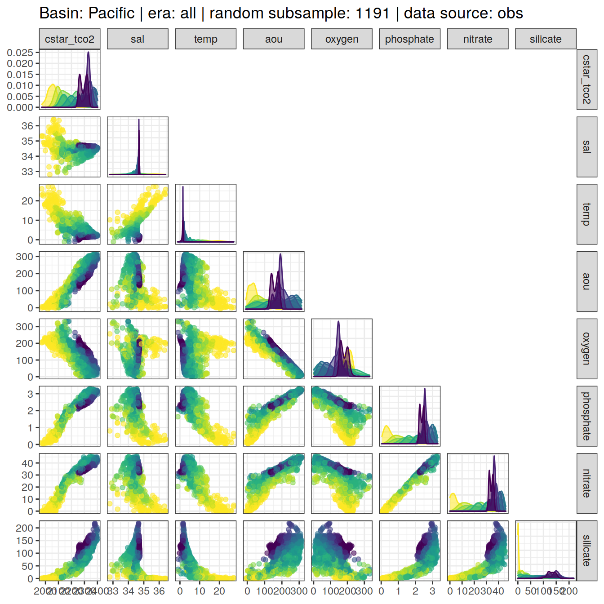

eMLR - assumption testing
Jens Daniel Müller
02 August, 2021
Last updated: 2021-08-02
Checks: 7 0
Knit directory: emlr_obs_v_XXX/
This reproducible R Markdown analysis was created with workflowr (version 1.6.2). The Checks tab describes the reproducibility checks that were applied when the results were created. The Past versions tab lists the development history.
Great! Since the R Markdown file has been committed to the Git repository, you know the exact version of the code that produced these results.
Great job! The global environment was empty. Objects defined in the global environment can affect the analysis in your R Markdown file in unknown ways. For reproduciblity it’s best to always run the code in an empty environment.
The command set.seed(20200707) was run prior to running the code in the R Markdown file. Setting a seed ensures that any results that rely on randomness, e.g. subsampling or permutations, are reproducible.
Great job! Recording the operating system, R version, and package versions is critical for reproducibility.
Nice! There were no cached chunks for this analysis, so you can be confident that you successfully produced the results during this run.
Great job! Using relative paths to the files within your workflowr project makes it easier to run your code on other machines.
Great! You are using Git for version control. Tracking code development and connecting the code version to the results is critical for reproducibility.
The results in this page were generated with repository version 296fc33. See the Past versions tab to see a history of the changes made to the R Markdown and HTML files.
Note that you need to be careful to ensure that all relevant files for the analysis have been committed to Git prior to generating the results (you can use wflow_publish or wflow_git_commit). workflowr only checks the R Markdown file, but you know if there are other scripts or data files that it depends on. Below is the status of the Git repository when the results were generated:
Ignored files:
Ignored: .Rhistory
Ignored: .Rproj.user/
Unstaged changes:
Modified: code/Workflowr_project_managment.R
Modified: data/auxillary/params_local.rds
Note that any generated files, e.g. HTML, png, CSS, etc., are not included in this status report because it is ok for generated content to have uncommitted changes.
These are the previous versions of the repository in which changes were made to the R Markdown (analysis/eMLR_assumption_testing.Rmd) and HTML (docs/eMLR_assumption_testing.html) files. If you’ve configured a remote Git repository (see ?wflow_git_remote), click on the hyperlinks in the table below to view the files as they were in that past version.
| File | Version | Author | Date | Message |
|---|---|---|---|---|
| html | d759279 | jens-daniel-mueller | 2021-08-02 | Build site. |
| html | 127b801 | jens-daniel-mueller | 2021-07-24 | Build site. |
| html | 1f65ef1 | jens-daniel-mueller | 2021-07-23 | Build site. |
| html | 912d90e | jens-daniel-mueller | 2021-07-23 | Build site. |
| html | 2477316 | jens-daniel-mueller | 2021-07-23 | rebuild: surface dcant mapping seperate |
| html | c9ccc00 | jens-daniel-mueller | 2021-07-22 | Build site. |
| html | 426b2df | jens-daniel-mueller | 2021-07-21 | Build site. |
| html | 971ce87 | jens-daniel-mueller | 2021-07-13 | Build site. |
| html | c18a8b1 | jens-daniel-mueller | 2021-07-09 | Build site. |
| Rmd | 795a3b0 | jens-daniel-mueller | 2021-07-09 | complete revision |
| html | 910d64a | jens-daniel-mueller | 2021-07-02 | Build site. |
| html | 1cbf907 | jens-daniel-mueller | 2021-07-02 | Build site. |
| html | 955f5dc | jens-daniel-mueller | 2021-06-29 | Build site. |
| html | 9480f94 | jens-daniel-mueller | 2021-06-29 | Build site. |
| html | d054c39 | jens-daniel-mueller | 2021-06-24 | Build site. |
| html | 4fcd066 | jens-daniel-mueller | 2021-06-24 | Build site. |
| html | 3b6387f | jens-daniel-mueller | 2021-06-18 | Build site. |
| html | 3052a6c | jens-daniel-mueller | 2021-06-15 | Build site. |
| html | 3cb64bd | jens-daniel-mueller | 2021-06-15 | Build site. |
| html | c6b3da6 | jens-daniel-mueller | 2021-06-14 | Build site. |
| html | 48c73fc | jens-daniel-mueller | 2021-06-14 | Build site. |
| html | 439ee80 | jens-daniel-mueller | 2021-06-11 | Build site. |
| html | 33ffcab | jens-daniel-mueller | 2021-06-10 | Build site. |
| html | 7e1f407 | jens-daniel-mueller | 2021-06-10 | Build site. |
| html | 2cbe18c | jens-daniel-mueller | 2021-06-10 | added zonal mean section control plots |
| html | 69c79d0 | jens-daniel-mueller | 2021-06-08 | Build site. |
| html | 1772903 | jens-daniel-mueller | 2021-06-07 | Build site. |
| html | 594ed9a | jens-daniel-mueller | 2021-06-04 | Build site. |
| html | db7df0e | jens-daniel-mueller | 2021-06-04 | rebuild without overlapping eras |
| html | 2edc791 | jens-daniel-mueller | 2021-06-04 | Build site. |
| html | 207339d | jens-daniel-mueller | 2021-06-03 | Build site. |
| html | 315710b | jens-daniel-mueller | 2021-06-03 | include anomalous changes |
| html | be90356 | jens-daniel-mueller | 2021-06-02 | Build site. |
| html | d37a85d | jens-daniel-mueller | 2021-05-31 | Build site. |
| html | 4b7a5ee | jens-daniel-mueller | 2021-05-28 | Build site. |
| html | 12b455a | jens-daniel-mueller | 2021-05-27 | Build site. |
| Rmd | ee13efb | jens-daniel-mueller | 2021-05-27 | optional source of local params fully implemented |
| html | 8c736a6 | jens-daniel-mueller | 2021-05-27 | Build site. |
| Rmd | dc8e4e1 | jens-daniel-mueller | 2021-05-27 | optional source of local params implemented |
| html | 25bd183 | jens-daniel-mueller | 2021-05-26 | Build site. |
| html | b79cb2d | jens-daniel-mueller | 2021-05-20 | Build site. |
| html | 62bd574 | jens-daniel-mueller | 2021-05-20 | Build site. |
| html | 7c56c39 | jens-daniel-mueller | 2021-05-19 | Build site. |
| html | 0de759e | jens-daniel-mueller | 2021-05-13 | Build site. |
| html | 52e7583 | jens-daniel-mueller | 2021-05-12 | Build site. |
| html | 969e631 | jens-daniel-mueller | 2021-05-12 | Build site. |
| html | d2a83bc | jens-daniel-mueller | 2021-04-16 | Build site. |
| html | c0a47df | jens-daniel-mueller | 2021-04-16 | Build site. |
| html | 50290e8 | jens-daniel-mueller | 2021-04-16 | overlapping eras |
| html | a00ec94 | jens-daniel-mueller | 2021-04-16 | Build site. |
| html | b6fe355 | jens-daniel-mueller | 2021-04-16 | Build site. |
| html | 81b7c6d | jens-daniel-mueller | 2021-04-16 | Build site. |
| html | ddec5b7 | jens-daniel-mueller | 2021-04-15 | Build site. |
| html | 29edae5 | jens-daniel-mueller | 2021-04-14 | Build site. |
| html | 099d566 | jens-daniel-mueller | 2021-04-14 | Build site. |
| html | bb44686 | jens-daniel-mueller | 2021-04-14 | Build site. |
| html | bf40480 | jens-daniel-mueller | 2021-04-13 | Build site. |
| html | 9f31fe3 | jens-daniel-mueller | 2021-04-13 | Build site. |
| Rmd | 80e1ee3 | jens-daniel-mueller | 2021-04-13 | rerun post-2000 with model data |
| html | c98be84 | jens-daniel-mueller | 2021-04-13 | Build site. |
| html | ea17c90 | jens-daniel-mueller | 2021-04-09 | Build site. |
| Rmd | 4d61e3d | jens-daniel-mueller | 2021-04-09 | included model data |
| html | 338dd3c | jens-daniel-mueller | 2021-04-09 | Build site. |
| html | a79ca2c | jens-daniel-mueller | 2021-04-09 | included model data |
| html | 7831fd3 | jens-daniel-mueller | 2021-04-09 | Build site. |
| html | 20b26d4 | jens-daniel-mueller | 2021-04-08 | Build site. |
| html | c0895f8 | jens-daniel-mueller | 2021-04-07 | Build site. |
| html | 156d5b7 | jens-daniel-mueller | 2021-04-07 | Build site. |
| html | eb827c9 | jens-daniel-mueller | 2021-04-07 | Build site. |
| Rmd | 49be8ed | jens-daniel-mueller | 2021-03-26 | included model data |
| html | ab5c8cf | jens-daniel-mueller | 2021-03-24 | Build site. |
| Rmd | da3c481 | jens-daniel-mueller | 2021-03-24 | included model data |
| html | 19faa17 | jens-daniel-mueller | 2021-03-24 | Build site. |
| Rmd | ae3b4d7 | jens-daniel-mueller | 2021-03-24 | included model data |
| html | 03b6009 | jens-daniel-mueller | 2021-03-23 | removed before copying template |
| html | 98d4a6d | jens-daniel-mueller | 2021-03-23 | Build site. |
| html | f155edd | jens-daniel-mueller | 2021-03-23 | Build site. |
| html | 380d215 | jens-daniel-mueller | 2021-03-21 | Build site. |
| html | 33b385b | jens-daniel-mueller | 2021-03-20 | Build site. |
| html | 330dcd0 | jens-daniel-mueller | 2021-03-20 | Build site. |
| html | 83a13de | jens-daniel-mueller | 2021-03-20 | Build site. |
| html | cf98c6d | jens-daniel-mueller | 2021-03-16 | Build site. |
| html | a1d52ff | jens-daniel-mueller | 2021-03-15 | Build site. |
| html | 0bade3b | jens-daniel-mueller | 2021-03-15 | Build site. |
| html | 27c1f4b | jens-daniel-mueller | 2021-03-14 | Build site. |
| html | af75ebf | jens-daniel-mueller | 2021-03-14 | Build site. |
| html | 5017709 | jens-daniel-mueller | 2021-03-11 | Build site. |
| html | 585b07f | jens-daniel-mueller | 2021-03-11 | Build site. |
| html | 6482ed7 | jens-daniel-mueller | 2021-03-11 | Build site. |
| html | 85a5ed2 | jens-daniel-mueller | 2021-03-10 | Build site. |
| html | 00688a1 | jens-daniel-mueller | 2021-03-05 | Build site. |
| html | 6c0bec6 | jens-daniel-mueller | 2021-03-05 | Build site. |
| html | 3c2ec33 | jens-daniel-mueller | 2021-03-05 | Build site. |
| html | af70b94 | jens-daniel-mueller | 2021-03-04 | Build site. |
| html | 86406d5 | jens-daniel-mueller | 2021-02-24 | Build site. |
| html | 3d3b4cc | jens-daniel-mueller | 2021-02-23 | Build site. |
| html | 7b672f7 | jens-daniel-mueller | 2021-01-11 | Build site. |
| html | 33ba23c | jens-daniel-mueller | 2021-01-07 | Build site. |
| html | 318609d | jens-daniel-mueller | 2020-12-23 | adapted more variable predictor selection |
| html | 9d0b2d0 | jens-daniel-mueller | 2020-12-23 | Build site. |
| html | 0aa2b50 | jens-daniel-mueller | 2020-12-23 | remove html before duplication |
| html | 39113c3 | jens-daniel-mueller | 2020-12-23 | Build site. |
| html | 2886da0 | jens-daniel-mueller | 2020-12-19 | Build site. |
| html | 02f0ee9 | jens-daniel-mueller | 2020-12-18 | cleaned up for copying template |
| html | 965dba3 | jens-daniel-mueller | 2020-12-18 | Build site. |
| html | 5d452fe | jens-daniel-mueller | 2020-12-18 | Build site. |
| Rmd | ca65bf5 | jens-daniel-mueller | 2020-12-18 | rebuild after final cleaning |
| html | 7bcb4eb | jens-daniel-mueller | 2020-12-18 | Build site. |
| html | d397028 | jens-daniel-mueller | 2020-12-18 | Build site. |
| html | 7131186 | jens-daniel-mueller | 2020-12-17 | Build site. |
| html | 22b07fb | jens-daniel-mueller | 2020-12-17 | Build site. |
| html | f3a708f | jens-daniel-mueller | 2020-12-17 | Build site. |
| html | e4ca289 | jens-daniel-mueller | 2020-12-16 | Build site. |
| html | 158fe26 | jens-daniel-mueller | 2020-12-15 | Build site. |
| html | 7a9a4cb | jens-daniel-mueller | 2020-12-15 | Build site. |
| html | 61b263c | jens-daniel-mueller | 2020-12-15 | Build site. |
| html | 4d612dd | jens-daniel-mueller | 2020-12-15 | Build site. |
| Rmd | e7e5ff1 | jens-daniel-mueller | 2020-12-15 | rebuild with eMLR target variable selection |
| html | 953caf3 | jens-daniel-mueller | 2020-12-15 | Build site. |
| html | 42daf5c | jens-daniel-mueller | 2020-12-14 | Build site. |
| Rmd | 923aa7f | jens-daniel-mueller | 2020-12-14 | rebuild with new path and auto folder creation |
| html | 984697e | jens-daniel-mueller | 2020-12-12 | Build site. |
| html | 3ebff89 | jens-daniel-mueller | 2020-12-12 | Build site. |
| html | 5d96d3c | jens-daniel-mueller | 2020-12-11 | Build site. |
| Rmd | 3d33a37 | jens-daniel-mueller | 2020-12-11 | selectable basinmask, try 5 |
| html | b01a367 | jens-daniel-mueller | 2020-12-09 | Build site. |
| html | 24a632f | jens-daniel-mueller | 2020-12-07 | Build site. |
| html | 92dca91 | jens-daniel-mueller | 2020-12-07 | Build site. |
| html | 6a8004b | jens-daniel-mueller | 2020-12-07 | Build site. |
| html | 70bf1a5 | jens-daniel-mueller | 2020-12-07 | Build site. |
| html | 7555355 | jens-daniel-mueller | 2020-12-07 | Build site. |
| html | 143d6fa | jens-daniel-mueller | 2020-12-07 | Build site. |
| Rmd | 33b1973 | jens-daniel-mueller | 2020-12-07 | run with WOCE flag 2 only |
| html | abc6818 | jens-daniel-mueller | 2020-12-03 | Build site. |
| Rmd | 992ba15 | jens-daniel-mueller | 2020-12-03 | rebuild with variable inventory depth |
| html | c8c2e7b | jens-daniel-mueller | 2020-12-03 | Build site. |
| Rmd | 83203db | jens-daniel-mueller | 2020-12-03 | calculate cant with variable inventory depth |
| html | 090e4d5 | jens-daniel-mueller | 2020-12-02 | Build site. |
| html | 7c25f7a | jens-daniel-mueller | 2020-12-02 | Build site. |
| html | ec8dc38 | jens-daniel-mueller | 2020-12-02 | Build site. |
| html | c987de1 | jens-daniel-mueller | 2020-12-02 | Build site. |
| html | f8358f8 | jens-daniel-mueller | 2020-12-02 | Build site. |
| html | b03ddb8 | jens-daniel-mueller | 2020-12-02 | Build site. |
| Rmd | 9183e8f | jens-daniel-mueller | 2020-12-02 | revised assignment of era to eras |
| html | 22d0127 | jens-daniel-mueller | 2020-12-01 | Build site. |
| html | 0ff728b | jens-daniel-mueller | 2020-12-01 | Build site. |
| html | 91435ae | jens-daniel-mueller | 2020-12-01 | Build site. |
| Rmd | 17d09be | jens-daniel-mueller | 2020-12-01 | auto eras naming |
| html | cf19652 | jens-daniel-mueller | 2020-11-30 | Build site. |
| Rmd | 2842970 | jens-daniel-mueller | 2020-11-30 | cleaned for eMLR part only |
| html | 196be51 | jens-daniel-mueller | 2020-11-30 | Build site. |
| Rmd | 7a4b015 | jens-daniel-mueller | 2020-11-30 | first rebuild on ETH server |
| Rmd | bc61ce3 | Jens Müller | 2020-11-30 | Initial commit |
| html | bc61ce3 | Jens Müller | 2020-11-30 | Initial commit |
1 Version ID
The results displayed on this site correspond to the Version_ID: v_XXX
2 Required data
Required are:
- cleaned and prepared GLODAPv2.2020 file
GLODAP <-
read_csv(paste(path_version_data,
"GLODAPv2.2020_MLR_fitting_ready.csv",
sep = ""))3 Predictor correlation
The correlation between:
- pairs of seven potential predictor variables and
- C* and seven potential predictor variables
were investigated based on:
- property-property plots and
- calculated correlation coeffcients.
3.1 Correlation plots
For an overview, a random subset of data from all eras was plotted separately for both basins, with color indicating neutral density slabs (high density = dark-purple color).
plot_fun <- function(df){
ggpairs(
data = df,
columns = c(params_local$MLR_target,
params_local$MLR_predictors),
upper = "blank",
ggplot2::aes(col = gamma_slab, fill = gamma_slab, alpha = 0.01)
) +
scale_fill_viridis_d(direction = -1) +
scale_color_viridis_d(direction = -1) +
labs(title = paste(
"Basin:",
unique(df$basin),
"| era: all | random subsample:",
nrow(df),
"| data source:",
unique(df$data_source)
))
}
GLODAP %>%
slice_sample(n = 5e3) %>%
group_split(basin, data_source) %>%
# head(1) %>%
map(plot_fun)[[1]]
| Version | Author | Date |
|---|---|---|
| d759279 | jens-daniel-mueller | 2021-08-02 |
| 127b801 | jens-daniel-mueller | 2021-07-24 |
| 912d90e | jens-daniel-mueller | 2021-07-23 |
| 2477316 | jens-daniel-mueller | 2021-07-23 |
| c9ccc00 | jens-daniel-mueller | 2021-07-22 |
| c18a8b1 | jens-daniel-mueller | 2021-07-09 |
| 910d64a | jens-daniel-mueller | 2021-07-02 |
| 1cbf907 | jens-daniel-mueller | 2021-07-02 |
| 955f5dc | jens-daniel-mueller | 2021-06-29 |
| 9480f94 | jens-daniel-mueller | 2021-06-29 |
| d054c39 | jens-daniel-mueller | 2021-06-24 |
| 4fcd066 | jens-daniel-mueller | 2021-06-24 |
| 3b6387f | jens-daniel-mueller | 2021-06-18 |
| c6b3da6 | jens-daniel-mueller | 2021-06-14 |
| 439ee80 | jens-daniel-mueller | 2021-06-11 |
| 33ffcab | jens-daniel-mueller | 2021-06-10 |
| 7e1f407 | jens-daniel-mueller | 2021-06-10 |
| 2cbe18c | jens-daniel-mueller | 2021-06-10 |
| 69c79d0 | jens-daniel-mueller | 2021-06-08 |
| 1772903 | jens-daniel-mueller | 2021-06-07 |
| 594ed9a | jens-daniel-mueller | 2021-06-04 |
| db7df0e | jens-daniel-mueller | 2021-06-04 |
| 2edc791 | jens-daniel-mueller | 2021-06-04 |
| 207339d | jens-daniel-mueller | 2021-06-03 |
| 315710b | jens-daniel-mueller | 2021-06-03 |
| be90356 | jens-daniel-mueller | 2021-06-02 |
| d37a85d | jens-daniel-mueller | 2021-05-31 |
| 4b7a5ee | jens-daniel-mueller | 2021-05-28 |
| 25bd183 | jens-daniel-mueller | 2021-05-26 |
| 62bd574 | jens-daniel-mueller | 2021-05-20 |
| 7c56c39 | jens-daniel-mueller | 2021-05-19 |
| 52e7583 | jens-daniel-mueller | 2021-05-12 |
| 969e631 | jens-daniel-mueller | 2021-05-12 |
| d2a83bc | jens-daniel-mueller | 2021-04-16 |
| c0a47df | jens-daniel-mueller | 2021-04-16 |
| 50290e8 | jens-daniel-mueller | 2021-04-16 |
| a00ec94 | jens-daniel-mueller | 2021-04-16 |
| b6fe355 | jens-daniel-mueller | 2021-04-16 |
| 81b7c6d | jens-daniel-mueller | 2021-04-16 |
| ddec5b7 | jens-daniel-mueller | 2021-04-15 |
| 29edae5 | jens-daniel-mueller | 2021-04-14 |
| 9f31fe3 | jens-daniel-mueller | 2021-04-13 |
| ea17c90 | jens-daniel-mueller | 2021-04-09 |
| 338dd3c | jens-daniel-mueller | 2021-04-09 |
| a79ca2c | jens-daniel-mueller | 2021-04-09 |
| eb827c9 | jens-daniel-mueller | 2021-04-07 |
| ab5c8cf | jens-daniel-mueller | 2021-03-24 |
| 03b6009 | jens-daniel-mueller | 2021-03-23 |
| 98d4a6d | jens-daniel-mueller | 2021-03-23 |
| 83a13de | jens-daniel-mueller | 2021-03-20 |
| cf98c6d | jens-daniel-mueller | 2021-03-16 |
| a1d52ff | jens-daniel-mueller | 2021-03-15 |
| 0bade3b | jens-daniel-mueller | 2021-03-15 |
| 27c1f4b | jens-daniel-mueller | 2021-03-14 |
| af75ebf | jens-daniel-mueller | 2021-03-14 |
| 5017709 | jens-daniel-mueller | 2021-03-11 |
| 585b07f | jens-daniel-mueller | 2021-03-11 |
| 85a5ed2 | jens-daniel-mueller | 2021-03-10 |
| 6c0bec6 | jens-daniel-mueller | 2021-03-05 |
| af70b94 | jens-daniel-mueller | 2021-03-04 |
| 7b672f7 | jens-daniel-mueller | 2021-01-11 |
| 33ba23c | jens-daniel-mueller | 2021-01-07 |
| 318609d | jens-daniel-mueller | 2020-12-23 |
| 9d0b2d0 | jens-daniel-mueller | 2020-12-23 |
| 0aa2b50 | jens-daniel-mueller | 2020-12-23 |
| 2886da0 | jens-daniel-mueller | 2020-12-19 |
| 02f0ee9 | jens-daniel-mueller | 2020-12-18 |
| 7bcb4eb | jens-daniel-mueller | 2020-12-18 |
| 158fe26 | jens-daniel-mueller | 2020-12-15 |
| 7a9a4cb | jens-daniel-mueller | 2020-12-15 |
| 61b263c | jens-daniel-mueller | 2020-12-15 |
| 4d612dd | jens-daniel-mueller | 2020-12-15 |
| 984697e | jens-daniel-mueller | 2020-12-12 |
| 3ebff89 | jens-daniel-mueller | 2020-12-12 |
| 5d96d3c | jens-daniel-mueller | 2020-12-11 |
[[2]]
| Version | Author | Date |
|---|---|---|
| d759279 | jens-daniel-mueller | 2021-08-02 |
| 127b801 | jens-daniel-mueller | 2021-07-24 |
| 912d90e | jens-daniel-mueller | 2021-07-23 |
| 2477316 | jens-daniel-mueller | 2021-07-23 |
| c9ccc00 | jens-daniel-mueller | 2021-07-22 |
| c18a8b1 | jens-daniel-mueller | 2021-07-09 |
| 910d64a | jens-daniel-mueller | 2021-07-02 |
| 1cbf907 | jens-daniel-mueller | 2021-07-02 |
| 955f5dc | jens-daniel-mueller | 2021-06-29 |
| 9480f94 | jens-daniel-mueller | 2021-06-29 |
| d054c39 | jens-daniel-mueller | 2021-06-24 |
| 4fcd066 | jens-daniel-mueller | 2021-06-24 |
| 3b6387f | jens-daniel-mueller | 2021-06-18 |
| c6b3da6 | jens-daniel-mueller | 2021-06-14 |
| 439ee80 | jens-daniel-mueller | 2021-06-11 |
| 33ffcab | jens-daniel-mueller | 2021-06-10 |
| 7e1f407 | jens-daniel-mueller | 2021-06-10 |
| 2cbe18c | jens-daniel-mueller | 2021-06-10 |
| 69c79d0 | jens-daniel-mueller | 2021-06-08 |
| 1772903 | jens-daniel-mueller | 2021-06-07 |
| 594ed9a | jens-daniel-mueller | 2021-06-04 |
| db7df0e | jens-daniel-mueller | 2021-06-04 |
| 2edc791 | jens-daniel-mueller | 2021-06-04 |
| 207339d | jens-daniel-mueller | 2021-06-03 |
| 315710b | jens-daniel-mueller | 2021-06-03 |
| d37a85d | jens-daniel-mueller | 2021-05-31 |
| 4b7a5ee | jens-daniel-mueller | 2021-05-28 |
| 25bd183 | jens-daniel-mueller | 2021-05-26 |
| 62bd574 | jens-daniel-mueller | 2021-05-20 |
| 7c56c39 | jens-daniel-mueller | 2021-05-19 |
| 52e7583 | jens-daniel-mueller | 2021-05-12 |
| 969e631 | jens-daniel-mueller | 2021-05-12 |
| d2a83bc | jens-daniel-mueller | 2021-04-16 |
| c0a47df | jens-daniel-mueller | 2021-04-16 |
| 50290e8 | jens-daniel-mueller | 2021-04-16 |
| a00ec94 | jens-daniel-mueller | 2021-04-16 |
| b6fe355 | jens-daniel-mueller | 2021-04-16 |
| 81b7c6d | jens-daniel-mueller | 2021-04-16 |
| ddec5b7 | jens-daniel-mueller | 2021-04-15 |
| 29edae5 | jens-daniel-mueller | 2021-04-14 |
| 9f31fe3 | jens-daniel-mueller | 2021-04-13 |
| ea17c90 | jens-daniel-mueller | 2021-04-09 |
| 338dd3c | jens-daniel-mueller | 2021-04-09 |
| a79ca2c | jens-daniel-mueller | 2021-04-09 |
| eb827c9 | jens-daniel-mueller | 2021-04-07 |
| ab5c8cf | jens-daniel-mueller | 2021-03-24 |
| 03b6009 | jens-daniel-mueller | 2021-03-23 |
| 98d4a6d | jens-daniel-mueller | 2021-03-23 |
| 83a13de | jens-daniel-mueller | 2021-03-20 |
| cf98c6d | jens-daniel-mueller | 2021-03-16 |
| a1d52ff | jens-daniel-mueller | 2021-03-15 |
| 0bade3b | jens-daniel-mueller | 2021-03-15 |
| 27c1f4b | jens-daniel-mueller | 2021-03-14 |
| af75ebf | jens-daniel-mueller | 2021-03-14 |
| 5017709 | jens-daniel-mueller | 2021-03-11 |
| 585b07f | jens-daniel-mueller | 2021-03-11 |
| 85a5ed2 | jens-daniel-mueller | 2021-03-10 |
| 6c0bec6 | jens-daniel-mueller | 2021-03-05 |
| af70b94 | jens-daniel-mueller | 2021-03-04 |
| 7b672f7 | jens-daniel-mueller | 2021-01-11 |
| 33ba23c | jens-daniel-mueller | 2021-01-07 |
| 318609d | jens-daniel-mueller | 2020-12-23 |
| 9d0b2d0 | jens-daniel-mueller | 2020-12-23 |
| 0aa2b50 | jens-daniel-mueller | 2020-12-23 |
| 2886da0 | jens-daniel-mueller | 2020-12-19 |
| 02f0ee9 | jens-daniel-mueller | 2020-12-18 |
| 7bcb4eb | jens-daniel-mueller | 2020-12-18 |
| 158fe26 | jens-daniel-mueller | 2020-12-15 |
| 7a9a4cb | jens-daniel-mueller | 2020-12-15 |
| 61b263c | jens-daniel-mueller | 2020-12-15 |
| 4d612dd | jens-daniel-mueller | 2020-12-15 |
| 984697e | jens-daniel-mueller | 2020-12-12 |
| 3ebff89 | jens-daniel-mueller | 2020-12-12 |
| 5d96d3c | jens-daniel-mueller | 2020-12-11 |
[[3]]
| Version | Author | Date |
|---|---|---|
| d759279 | jens-daniel-mueller | 2021-08-02 |
| 127b801 | jens-daniel-mueller | 2021-07-24 |
| 912d90e | jens-daniel-mueller | 2021-07-23 |
| 2477316 | jens-daniel-mueller | 2021-07-23 |
| c9ccc00 | jens-daniel-mueller | 2021-07-22 |
| c18a8b1 | jens-daniel-mueller | 2021-07-09 |
| 910d64a | jens-daniel-mueller | 2021-07-02 |
| 1cbf907 | jens-daniel-mueller | 2021-07-02 |
| 955f5dc | jens-daniel-mueller | 2021-06-29 |
| 9480f94 | jens-daniel-mueller | 2021-06-29 |
| d054c39 | jens-daniel-mueller | 2021-06-24 |
| 4fcd066 | jens-daniel-mueller | 2021-06-24 |
| 3b6387f | jens-daniel-mueller | 2021-06-18 |
| c6b3da6 | jens-daniel-mueller | 2021-06-14 |
| 439ee80 | jens-daniel-mueller | 2021-06-11 |
| 33ffcab | jens-daniel-mueller | 2021-06-10 |
| 7e1f407 | jens-daniel-mueller | 2021-06-10 |
| 2cbe18c | jens-daniel-mueller | 2021-06-10 |
| 69c79d0 | jens-daniel-mueller | 2021-06-08 |
| 1772903 | jens-daniel-mueller | 2021-06-07 |
| 594ed9a | jens-daniel-mueller | 2021-06-04 |
| db7df0e | jens-daniel-mueller | 2021-06-04 |
| 2edc791 | jens-daniel-mueller | 2021-06-04 |
| 207339d | jens-daniel-mueller | 2021-06-03 |
| 315710b | jens-daniel-mueller | 2021-06-03 |
| be90356 | jens-daniel-mueller | 2021-06-02 |
| d37a85d | jens-daniel-mueller | 2021-05-31 |
| 4b7a5ee | jens-daniel-mueller | 2021-05-28 |
| 25bd183 | jens-daniel-mueller | 2021-05-26 |
| 62bd574 | jens-daniel-mueller | 2021-05-20 |
| 7c56c39 | jens-daniel-mueller | 2021-05-19 |
| 52e7583 | jens-daniel-mueller | 2021-05-12 |
| 969e631 | jens-daniel-mueller | 2021-05-12 |
| d2a83bc | jens-daniel-mueller | 2021-04-16 |
| c0a47df | jens-daniel-mueller | 2021-04-16 |
| 50290e8 | jens-daniel-mueller | 2021-04-16 |
| a00ec94 | jens-daniel-mueller | 2021-04-16 |
| b6fe355 | jens-daniel-mueller | 2021-04-16 |
| 81b7c6d | jens-daniel-mueller | 2021-04-16 |
| ddec5b7 | jens-daniel-mueller | 2021-04-15 |
| 29edae5 | jens-daniel-mueller | 2021-04-14 |
| 099d566 | jens-daniel-mueller | 2021-04-14 |
| bb44686 | jens-daniel-mueller | 2021-04-14 |
| bf40480 | jens-daniel-mueller | 2021-04-13 |
| 9f31fe3 | jens-daniel-mueller | 2021-04-13 |
| ea17c90 | jens-daniel-mueller | 2021-04-09 |
| 338dd3c | jens-daniel-mueller | 2021-04-09 |
| a79ca2c | jens-daniel-mueller | 2021-04-09 |
| eb827c9 | jens-daniel-mueller | 2021-04-07 |
| ab5c8cf | jens-daniel-mueller | 2021-03-24 |
| 0aa2b50 | jens-daniel-mueller | 2020-12-23 |
| 2886da0 | jens-daniel-mueller | 2020-12-19 |
| 02f0ee9 | jens-daniel-mueller | 2020-12-18 |
| 7bcb4eb | jens-daniel-mueller | 2020-12-18 |
| 158fe26 | jens-daniel-mueller | 2020-12-15 |
| 7a9a4cb | jens-daniel-mueller | 2020-12-15 |
| 61b263c | jens-daniel-mueller | 2020-12-15 |
| 4d612dd | jens-daniel-mueller | 2020-12-15 |
| 984697e | jens-daniel-mueller | 2020-12-12 |
| 3ebff89 | jens-daniel-mueller | 2020-12-12 |
| 5d96d3c | jens-daniel-mueller | 2020-12-11 |
[[4]]
| Version | Author | Date |
|---|---|---|
| d759279 | jens-daniel-mueller | 2021-08-02 |
| 127b801 | jens-daniel-mueller | 2021-07-24 |
| 912d90e | jens-daniel-mueller | 2021-07-23 |
| 2477316 | jens-daniel-mueller | 2021-07-23 |
| c9ccc00 | jens-daniel-mueller | 2021-07-22 |
| c18a8b1 | jens-daniel-mueller | 2021-07-09 |
| 910d64a | jens-daniel-mueller | 2021-07-02 |
| 1cbf907 | jens-daniel-mueller | 2021-07-02 |
| 955f5dc | jens-daniel-mueller | 2021-06-29 |
| 9480f94 | jens-daniel-mueller | 2021-06-29 |
| d054c39 | jens-daniel-mueller | 2021-06-24 |
| 4fcd066 | jens-daniel-mueller | 2021-06-24 |
| 3b6387f | jens-daniel-mueller | 2021-06-18 |
| c6b3da6 | jens-daniel-mueller | 2021-06-14 |
| 439ee80 | jens-daniel-mueller | 2021-06-11 |
| 33ffcab | jens-daniel-mueller | 2021-06-10 |
| 7e1f407 | jens-daniel-mueller | 2021-06-10 |
| 2cbe18c | jens-daniel-mueller | 2021-06-10 |
| 69c79d0 | jens-daniel-mueller | 2021-06-08 |
| 1772903 | jens-daniel-mueller | 2021-06-07 |
| 594ed9a | jens-daniel-mueller | 2021-06-04 |
| db7df0e | jens-daniel-mueller | 2021-06-04 |
| 2edc791 | jens-daniel-mueller | 2021-06-04 |
| 207339d | jens-daniel-mueller | 2021-06-03 |
| 315710b | jens-daniel-mueller | 2021-06-03 |
| d37a85d | jens-daniel-mueller | 2021-05-31 |
| 4b7a5ee | jens-daniel-mueller | 2021-05-28 |
| 25bd183 | jens-daniel-mueller | 2021-05-26 |
| 62bd574 | jens-daniel-mueller | 2021-05-20 |
| 7c56c39 | jens-daniel-mueller | 2021-05-19 |
| 52e7583 | jens-daniel-mueller | 2021-05-12 |
| 969e631 | jens-daniel-mueller | 2021-05-12 |
| d2a83bc | jens-daniel-mueller | 2021-04-16 |
| c0a47df | jens-daniel-mueller | 2021-04-16 |
| 50290e8 | jens-daniel-mueller | 2021-04-16 |
| a00ec94 | jens-daniel-mueller | 2021-04-16 |
| b6fe355 | jens-daniel-mueller | 2021-04-16 |
| 81b7c6d | jens-daniel-mueller | 2021-04-16 |
| ddec5b7 | jens-daniel-mueller | 2021-04-15 |
| 29edae5 | jens-daniel-mueller | 2021-04-14 |
| 099d566 | jens-daniel-mueller | 2021-04-14 |
| bb44686 | jens-daniel-mueller | 2021-04-14 |
| bf40480 | jens-daniel-mueller | 2021-04-13 |
| 9f31fe3 | jens-daniel-mueller | 2021-04-13 |
| ea17c90 | jens-daniel-mueller | 2021-04-09 |
| 338dd3c | jens-daniel-mueller | 2021-04-09 |
| a79ca2c | jens-daniel-mueller | 2021-04-09 |
| eb827c9 | jens-daniel-mueller | 2021-04-07 |
| ab5c8cf | jens-daniel-mueller | 2021-03-24 |
| 984697e | jens-daniel-mueller | 2020-12-12 |
| 3ebff89 | jens-daniel-mueller | 2020-12-12 |
| 5d96d3c | jens-daniel-mueller | 2020-12-11 |
[[5]]
| Version | Author | Date |
|---|---|---|
| 127b801 | jens-daniel-mueller | 2021-07-24 |
| 912d90e | jens-daniel-mueller | 2021-07-23 |
| 2477316 | jens-daniel-mueller | 2021-07-23 |
| c9ccc00 | jens-daniel-mueller | 2021-07-22 |
| c18a8b1 | jens-daniel-mueller | 2021-07-09 |
| 910d64a | jens-daniel-mueller | 2021-07-02 |
| 1cbf907 | jens-daniel-mueller | 2021-07-02 |
| 955f5dc | jens-daniel-mueller | 2021-06-29 |
| b6fe355 | jens-daniel-mueller | 2021-04-16 |
| 81b7c6d | jens-daniel-mueller | 2021-04-16 |
| 099d566 | jens-daniel-mueller | 2021-04-14 |
| bb44686 | jens-daniel-mueller | 2021-04-14 |
| 984697e | jens-daniel-mueller | 2020-12-12 |
| 3ebff89 | jens-daniel-mueller | 2020-12-12 |
| 5d96d3c | jens-daniel-mueller | 2020-12-11 |
[[6]]
| Version | Author | Date |
|---|---|---|
| 127b801 | jens-daniel-mueller | 2021-07-24 |
| 912d90e | jens-daniel-mueller | 2021-07-23 |
| 2477316 | jens-daniel-mueller | 2021-07-23 |
| c9ccc00 | jens-daniel-mueller | 2021-07-22 |
| c18a8b1 | jens-daniel-mueller | 2021-07-09 |
| 910d64a | jens-daniel-mueller | 2021-07-02 |
| 1cbf907 | jens-daniel-mueller | 2021-07-02 |
| 955f5dc | jens-daniel-mueller | 2021-06-29 |
| b6fe355 | jens-daniel-mueller | 2021-04-16 |
| 81b7c6d | jens-daniel-mueller | 2021-04-16 |
| 099d566 | jens-daniel-mueller | 2021-04-14 |
| bb44686 | jens-daniel-mueller | 2021-04-14 |
GLODAP <- GLODAP %>%
filter(data_source == "obs") %>%
select(-data_source)Individual correlation plots for each basin, era and neutral density (gamma) slab are available at:
/nfs/kryo/work/jenmueller/emlr_cant/observations/v_XXX/figures/Observations_correlation/
if (params_local$plot_all_figures == "y") {
for (i_basin in unique(GLODAP$basin)) {
for (i_era in unique(GLODAP$era)) {
# i_basin <- unique(GLODAP$basin)[1]
# i_era <- unique(GLODAP$era)[1]
GLODAP_basin_era <- GLODAP %>%
filter(basin == i_basin,
era == i_era)
for (i_gamma_slab in unique(GLODAP_basin_era$gamma_slab)) {
# i_gamma_slab <- unique(GLODAP_basin_era$gamma_slab)[5]
GLODAP_highlight <- GLODAP_basin_era %>%
mutate(gamma_highlight = if_else(gamma_slab == i_gamma_slab,
"in", "out")) %>%
arrange(desc(gamma_highlight))
p <- GLODAP_highlight %>%
ggpairs(
columns = c(params_local$MLR_target,
params_local$MLR_predictors),
ggplot2::aes(
col = gamma_highlight,
fill = gamma_highlight,
alpha = 0.01
)
) +
scale_fill_manual(values = c("red", "grey")) +
scale_color_manual(values = c("red", "grey")) +
labs(
title = paste(
i_era,
"|",
i_basin,
"| Gamma slab",
i_gamma_slab,
"| # obs total",
nrow(GLODAP_basin_era),
"| # obs slab",
nrow(GLODAP_highlight %>%
filter(gamma_highlight == "in"))
)
)
png(
filename = paste(
path_version_figures,
"Observations_correlation/",
paste(
"Predictor_correlation",
i_era,
i_basin,
i_gamma_slab,
".png",
sep = "_"
),
sep = ""),
width = 12,
height = 12,
units = "in",
res = 300
)
print(p)
dev.off()
}
}
}
}3.2 Correlation assesment
3.2.1 Calculation of correlation coeffcients
Correlation coefficients were calculated individually within each slabs, era and basin.
for (i_basin in unique(GLODAP$basin)) {
for (i_era in unique(GLODAP$era)) {
# i_basin <- unique(GLODAP$basin)[1]
# i_era <- unique(GLODAP$era)[1]
GLODAP_basin_era <- GLODAP %>%
filter(basin == i_basin,
era == i_era) %>%
select(basin,
era,
gamma_slab,
params_local$MLR_target,
params_local$MLR_predictors)
for (i_gamma_slab in unique(GLODAP_basin_era$gamma_slab)) {
# i_gamma_slab <- unique(GLODAP_basin_era$gamma_slab)[5]
print(i_gamma_slab)
GLODAP_basin_era_slab <- GLODAP_basin_era %>%
filter(gamma_slab == i_gamma_slab)
# calculate correlation table
cor_target_predictor_temp <- GLODAP_basin_era_slab %>%
select(-c(basin, era, gamma_slab)) %>%
correlate() %>%
focus(params_local$MLR_target) %>%
mutate(basin = i_basin,
era = i_era,
gamma_slab = i_gamma_slab)
if (exists("cor_target_predictor")) {
cor_target_predictor <-
bind_rows(cor_target_predictor, cor_target_predictor_temp)
}
if (!exists("cor_target_predictor")) {
cor_target_predictor <- cor_target_predictor_temp
}
cor_predictors_temp <- GLODAP_basin_era_slab %>%
select(-c(basin, era, gamma_slab)) %>%
correlate() %>%
shave %>%
stretch() %>%
filter(!is.na(r),
x != params_local$MLR_target,
y != params_local$MLR_target) %>%
mutate(pair = paste(x, y, sep = " + ")) %>%
select(-c(x, y)) %>%
mutate(basin = i_basin,
era = i_era,
gamma_slab = i_gamma_slab)
if (exists("cor_predictors")) {
cor_predictors <- bind_rows(cor_predictors, cor_predictors_temp)
}
if (!exists("cor_predictors")) {
cor_predictors <- cor_predictors_temp
}
}
}
}
rm(cor_predictors_temp, cor_target_predictor_temp,
i_gamma_slab, i_era, i_basin,
GLODAP_basin_era, GLODAP_basin_era_slab)3.2.2 Predictor pairs
Below, the range of correlations coefficients for each predictor pair is plotted per basin (facet) and density slab (color). Note that the range indicates the min and max values of in total 3 calculated coefficients (one per era).
# calculate min, max, mean across all eras
cor_predictors_stats <- cor_predictors %>%
group_by(pair, basin, gamma_slab) %>%
summarise(mean_r = mean(r),
min_r = min(r),
max_r = max(r)) %>%
ungroup()
# plot figure
cor_predictors_stats %>%
mutate(pair = reorder(pair, mean_r)) %>%
ggplot() +
geom_vline(xintercept = c(-0.9, 0.9), col = "red") +
geom_vline(xintercept = 0) +
geom_linerange(
aes(y = pair, xmin = min_r, xmax = max_r, col = gamma_slab),
position = position_dodge(width = 0.6)) +
facet_wrap(~basin) +
scale_color_viridis_d(direction = -1) +
labs(x = "correlation coefficient", y = "") +
theme(legend.position = "top")
| Version | Author | Date |
|---|---|---|
| d759279 | jens-daniel-mueller | 2021-08-02 |
| 127b801 | jens-daniel-mueller | 2021-07-24 |
| 912d90e | jens-daniel-mueller | 2021-07-23 |
| 2477316 | jens-daniel-mueller | 2021-07-23 |
| c9ccc00 | jens-daniel-mueller | 2021-07-22 |
| 910d64a | jens-daniel-mueller | 2021-07-02 |
| 1cbf907 | jens-daniel-mueller | 2021-07-02 |
| 955f5dc | jens-daniel-mueller | 2021-06-29 |
| 9480f94 | jens-daniel-mueller | 2021-06-29 |
| d054c39 | jens-daniel-mueller | 2021-06-24 |
| 4fcd066 | jens-daniel-mueller | 2021-06-24 |
| 7e1f407 | jens-daniel-mueller | 2021-06-10 |
| 2cbe18c | jens-daniel-mueller | 2021-06-10 |
| 594ed9a | jens-daniel-mueller | 2021-06-04 |
| db7df0e | jens-daniel-mueller | 2021-06-04 |
| 207339d | jens-daniel-mueller | 2021-06-03 |
| 315710b | jens-daniel-mueller | 2021-06-03 |
| d37a85d | jens-daniel-mueller | 2021-05-31 |
| 25bd183 | jens-daniel-mueller | 2021-05-26 |
| 62bd574 | jens-daniel-mueller | 2021-05-20 |
| 7c56c39 | jens-daniel-mueller | 2021-05-19 |
| 52e7583 | jens-daniel-mueller | 2021-05-12 |
| 969e631 | jens-daniel-mueller | 2021-05-12 |
| d2a83bc | jens-daniel-mueller | 2021-04-16 |
| c0a47df | jens-daniel-mueller | 2021-04-16 |
| 50290e8 | jens-daniel-mueller | 2021-04-16 |
| b6fe355 | jens-daniel-mueller | 2021-04-16 |
| 81b7c6d | jens-daniel-mueller | 2021-04-16 |
| ddec5b7 | jens-daniel-mueller | 2021-04-15 |
| 29edae5 | jens-daniel-mueller | 2021-04-14 |
| 099d566 | jens-daniel-mueller | 2021-04-14 |
| bb44686 | jens-daniel-mueller | 2021-04-14 |
| bf40480 | jens-daniel-mueller | 2021-04-13 |
| 9f31fe3 | jens-daniel-mueller | 2021-04-13 |
| 338dd3c | jens-daniel-mueller | 2021-04-09 |
| a79ca2c | jens-daniel-mueller | 2021-04-09 |
| eb827c9 | jens-daniel-mueller | 2021-04-07 |
| 19faa17 | jens-daniel-mueller | 2021-03-24 |
| 03b6009 | jens-daniel-mueller | 2021-03-23 |
| 98d4a6d | jens-daniel-mueller | 2021-03-23 |
| f155edd | jens-daniel-mueller | 2021-03-23 |
| 83a13de | jens-daniel-mueller | 2021-03-20 |
| cf98c6d | jens-daniel-mueller | 2021-03-16 |
| a1d52ff | jens-daniel-mueller | 2021-03-15 |
| 0bade3b | jens-daniel-mueller | 2021-03-15 |
| 27c1f4b | jens-daniel-mueller | 2021-03-14 |
| af75ebf | jens-daniel-mueller | 2021-03-14 |
| 5017709 | jens-daniel-mueller | 2021-03-11 |
| 585b07f | jens-daniel-mueller | 2021-03-11 |
| 85a5ed2 | jens-daniel-mueller | 2021-03-10 |
| 6c0bec6 | jens-daniel-mueller | 2021-03-05 |
| 7b672f7 | jens-daniel-mueller | 2021-01-11 |
| 33ba23c | jens-daniel-mueller | 2021-01-07 |
| 318609d | jens-daniel-mueller | 2020-12-23 |
| 9d0b2d0 | jens-daniel-mueller | 2020-12-23 |
| 0aa2b50 | jens-daniel-mueller | 2020-12-23 |
| 2886da0 | jens-daniel-mueller | 2020-12-19 |
| 02f0ee9 | jens-daniel-mueller | 2020-12-18 |
| 158fe26 | jens-daniel-mueller | 2020-12-15 |
| 984697e | jens-daniel-mueller | 2020-12-12 |
| 3ebff89 | jens-daniel-mueller | 2020-12-12 |
| 5d96d3c | jens-daniel-mueller | 2020-12-11 |
| 24a632f | jens-daniel-mueller | 2020-12-07 |
| 6a8004b | jens-daniel-mueller | 2020-12-07 |
| 70bf1a5 | jens-daniel-mueller | 2020-12-07 |
| 7555355 | jens-daniel-mueller | 2020-12-07 |
| 143d6fa | jens-daniel-mueller | 2020-12-07 |
| 0ff728b | jens-daniel-mueller | 2020-12-01 |
| 91435ae | jens-daniel-mueller | 2020-12-01 |
| 196be51 | jens-daniel-mueller | 2020-11-30 |
| bc61ce3 | Jens Müller | 2020-11-30 |
# print table
kable(cor_predictors_stats) %>%
add_header_above() %>%
kable_styling() %>%
scroll_box(width = "100%", height = "400px")| pair | basin | gamma_slab | mean_r | min_r | max_r |
|---|---|---|---|---|---|
| aou + nitrate | Atlantic | (-Inf,26] | 0.9200087 | 0.9089190 | 0.9310983 |
| aou + nitrate | Atlantic | (26,26.5] | 0.9535819 | 0.9475635 | 0.9596003 |
| aou + nitrate | Atlantic | (26.5,26.75] | 0.9465836 | 0.9373099 | 0.9558573 |
| aou + nitrate | Atlantic | (26.75,27] | 0.8598283 | 0.8519281 | 0.8677284 |
| aou + nitrate | Atlantic | (27,27.25] | 0.7615350 | 0.7577124 | 0.7653575 |
| aou + nitrate | Atlantic | (27.25,27.5] | 0.7230556 | 0.7031493 | 0.7429620 |
| aou + nitrate | Atlantic | (27.5,27.75] | 0.8258758 | 0.8168610 | 0.8348905 |
| aou + nitrate | Atlantic | (27.75,27.85] | 0.9018280 | 0.8888996 | 0.9147565 |
| aou + nitrate | Atlantic | (27.85,27.95] | 0.9025951 | 0.8914739 | 0.9137162 |
| aou + nitrate | Atlantic | (27.95,28.05] | 0.9116956 | 0.9104505 | 0.9129408 |
| aou + nitrate | Atlantic | (28.05,28.1] | 0.9532988 | 0.9486836 | 0.9579139 |
| aou + nitrate | Atlantic | (28.1,28.15] | 0.9705781 | 0.9625721 | 0.9785840 |
| aou + nitrate | Atlantic | (28.15,28.2] | 0.9800037 | 0.9731999 | 0.9868075 |
| aou + nitrate | Atlantic | (28.2, Inf] | 0.9255660 | 0.9112053 | 0.9399268 |
| aou + nitrate | Indian | (-Inf,26] | 0.9897740 | 0.9862230 | 0.9933250 |
| aou + nitrate | Indian | (26,26.5] | 0.9695572 | 0.9496839 | 0.9894305 |
| aou + nitrate | Indian | (26.5,26.75] | 0.9357720 | 0.9314278 | 0.9401161 |
| aou + nitrate | Indian | (26.75,27] | 0.8597742 | 0.8209442 | 0.8986041 |
| aou + nitrate | Indian | (27,27.25] | 0.7761907 | 0.7002328 | 0.8521487 |
| aou + nitrate | Indian | (27.25,27.5] | 0.8884171 | 0.8616105 | 0.9152236 |
| aou + nitrate | Indian | (27.5,27.75] | 0.9220561 | 0.9000231 | 0.9440890 |
| aou + nitrate | Indian | (27.75,27.85] | 0.8892939 | 0.8529842 | 0.9256036 |
| aou + nitrate | Indian | (27.85,27.95] | 0.8595643 | 0.8266703 | 0.8924582 |
| aou + nitrate | Indian | (27.95,28.05] | 0.7717080 | 0.6838430 | 0.8595729 |
| aou + nitrate | Indian | (28.05,28.1] | 0.8957486 | 0.8493295 | 0.9421677 |
| aou + nitrate | Indian | (28.1,28.2] | 0.8624642 | 0.8061462 | 0.9187823 |
| aou + nitrate | Indian | (28.2,28.3] | 0.3346168 | 0.3108474 | 0.3583862 |
| aou + nitrate | Indian | (28.3,28.4] | 0.4813331 | 0.3178341 | 0.6448321 |
| aou + nitrate | Indian | (28.4, Inf] | 0.8860373 | 0.8860373 | 0.8860373 |
| aou + nitrate | Pacific | (-Inf,26] | 0.8546215 | 0.8295206 | 0.8797223 |
| aou + nitrate | Pacific | (26,26.5] | 0.8265547 | 0.8243839 | 0.8287255 |
| aou + nitrate | Pacific | (26.5,26.75] | 0.7904082 | 0.7330294 | 0.8477870 |
| aou + nitrate | Pacific | (26.75,27] | 0.9195170 | 0.9070429 | 0.9319910 |
| aou + nitrate | Pacific | (27,27.25] | 0.9720636 | 0.9704578 | 0.9736694 |
| aou + nitrate | Pacific | (27.25,27.5] | 0.9777129 | 0.9768950 | 0.9785308 |
| aou + nitrate | Pacific | (27.5,27.75] | 0.9812257 | 0.9808354 | 0.9816159 |
| aou + nitrate | Pacific | (27.75,27.85] | 0.9883507 | 0.9880208 | 0.9886806 |
| aou + nitrate | Pacific | (27.85,27.95] | 0.9876715 | 0.9864347 | 0.9889082 |
| aou + nitrate | Pacific | (27.95,28.05] | 0.9758368 | 0.9704472 | 0.9812264 |
| aou + nitrate | Pacific | (28.05,28.1] | 0.9756807 | 0.9649357 | 0.9864257 |
| aou + nitrate | Pacific | (28.1,28.2] | 0.9799987 | 0.9780819 | 0.9819156 |
| aou + nitrate | Pacific | (28.2,28.3] | 0.0903007 | 0.0898287 | 0.0907727 |
| aou + nitrate | Pacific | (28.3,28.4] | 0.7842816 | 0.7685477 | 0.8000154 |
| aou + nitrate | Pacific | (28.4, Inf] | 0.2799291 | 0.2799291 | 0.2799291 |
| aou + oxygen | Atlantic | (-Inf,26] | -0.9422513 | -0.9497004 | -0.9348023 |
| aou + oxygen | Atlantic | (26,26.5] | -0.9597786 | -0.9676907 | -0.9518665 |
| aou + oxygen | Atlantic | (26.5,26.75] | -0.9610238 | -0.9643371 | -0.9577106 |
| aou + oxygen | Atlantic | (26.75,27] | -0.9410272 | -0.9512390 | -0.9308153 |
| aou + oxygen | Atlantic | (27,27.25] | -0.9531183 | -0.9601886 | -0.9460481 |
| aou + oxygen | Atlantic | (27.25,27.5] | -0.9409474 | -0.9489497 | -0.9329451 |
| aou + oxygen | Atlantic | (27.5,27.75] | -0.9152550 | -0.9166423 | -0.9138678 |
| aou + oxygen | Atlantic | (27.75,27.85] | -0.9359640 | -0.9473402 | -0.9245879 |
| aou + oxygen | Atlantic | (27.85,27.95] | -0.9573024 | -0.9632103 | -0.9513946 |
| aou + oxygen | Atlantic | (27.95,28.05] | -0.9557772 | -0.9558893 | -0.9556650 |
| aou + oxygen | Atlantic | (28.05,28.1] | -0.9784055 | -0.9824705 | -0.9743405 |
| aou + oxygen | Atlantic | (28.1,28.15] | -0.9886283 | -0.9906564 | -0.9866001 |
| aou + oxygen | Atlantic | (28.15,28.2] | -0.9932187 | -0.9953955 | -0.9910419 |
| aou + oxygen | Atlantic | (28.2, Inf] | -0.9829180 | -0.9840627 | -0.9817734 |
| aou + oxygen | Indian | (-Inf,26] | -0.9921546 | -0.9931137 | -0.9911955 |
| aou + oxygen | Indian | (26,26.5] | -0.9970986 | -0.9972125 | -0.9969847 |
| aou + oxygen | Indian | (26.5,26.75] | -0.9951711 | -0.9966021 | -0.9937400 |
| aou + oxygen | Indian | (26.75,27] | -0.9899701 | -0.9947958 | -0.9851443 |
| aou + oxygen | Indian | (27,27.25] | -0.9935399 | -0.9958173 | -0.9912625 |
| aou + oxygen | Indian | (27.25,27.5] | -0.9963556 | -0.9972562 | -0.9954550 |
| aou + oxygen | Indian | (27.5,27.75] | -0.9969433 | -0.9973242 | -0.9965624 |
| aou + oxygen | Indian | (27.75,27.85] | -0.9972091 | -0.9977057 | -0.9967125 |
| aou + oxygen | Indian | (27.85,27.95] | -0.9958862 | -0.9959636 | -0.9958087 |
| aou + oxygen | Indian | (27.95,28.05] | -0.9900637 | -0.9913171 | -0.9888103 |
| aou + oxygen | Indian | (28.05,28.1] | -0.9898603 | -0.9943882 | -0.9853323 |
| aou + oxygen | Indian | (28.1,28.2] | -0.9870780 | -0.9925733 | -0.9815827 |
| aou + oxygen | Indian | (28.2,28.3] | -0.9760282 | -0.9787534 | -0.9733031 |
| aou + oxygen | Indian | (28.3,28.4] | -0.9964432 | -0.9971609 | -0.9957254 |
| aou + oxygen | Indian | (28.4, Inf] | -0.9998086 | -0.9998086 | -0.9998086 |
| aou + oxygen | Pacific | (-Inf,26] | -0.8401463 | -0.8495696 | -0.8307230 |
| aou + oxygen | Pacific | (26,26.5] | -0.9695689 | -0.9717186 | -0.9674192 |
| aou + oxygen | Pacific | (26.5,26.75] | -0.9757081 | -0.9787227 | -0.9726936 |
| aou + oxygen | Pacific | (26.75,27] | -0.9817775 | -0.9846796 | -0.9788754 |
| aou + oxygen | Pacific | (27,27.25] | -0.9943873 | -0.9945372 | -0.9942374 |
| aou + oxygen | Pacific | (27.25,27.5] | -0.9959212 | -0.9959335 | -0.9959089 |
| aou + oxygen | Pacific | (27.5,27.75] | -0.9949404 | -0.9957860 | -0.9940949 |
| aou + oxygen | Pacific | (27.75,27.85] | -0.9966963 | -0.9978031 | -0.9955894 |
| aou + oxygen | Pacific | (27.85,27.95] | -0.9969029 | -0.9984296 | -0.9953762 |
| aou + oxygen | Pacific | (27.95,28.05] | -0.9977944 | -0.9987470 | -0.9968418 |
| aou + oxygen | Pacific | (28.05,28.1] | -0.9989333 | -0.9991678 | -0.9986988 |
| aou + oxygen | Pacific | (28.1,28.2] | -0.9982847 | -0.9986451 | -0.9979243 |
| aou + oxygen | Pacific | (28.2,28.3] | -0.9661014 | -0.9721744 | -0.9600285 |
| aou + oxygen | Pacific | (28.3,28.4] | -0.9992310 | -0.9993595 | -0.9991026 |
| aou + oxygen | Pacific | (28.4, Inf] | -0.9957301 | -0.9957301 | -0.9957301 |
| aou + silicate | Atlantic | (-Inf,26] | 0.5129590 | 0.4260241 | 0.5998939 |
| aou + silicate | Atlantic | (26,26.5] | 0.7809932 | 0.7206267 | 0.8413597 |
| aou + silicate | Atlantic | (26.5,26.75] | 0.8357729 | 0.8080762 | 0.8634697 |
| aou + silicate | Atlantic | (26.75,27] | 0.7945351 | 0.7588266 | 0.8302436 |
| aou + silicate | Atlantic | (27,27.25] | 0.6270254 | 0.6026677 | 0.6513831 |
| aou + silicate | Atlantic | (27.25,27.5] | 0.4032374 | 0.3771343 | 0.4293406 |
| aou + silicate | Atlantic | (27.5,27.75] | 0.5012790 | 0.4837448 | 0.5188132 |
| aou + silicate | Atlantic | (27.75,27.85] | 0.7503823 | 0.7421718 | 0.7585927 |
| aou + silicate | Atlantic | (27.85,27.95] | 0.8078771 | 0.7992330 | 0.8165211 |
| aou + silicate | Atlantic | (27.95,28.05] | 0.8860623 | 0.8814193 | 0.8907054 |
| aou + silicate | Atlantic | (28.05,28.1] | 0.9554692 | 0.9533269 | 0.9576116 |
| aou + silicate | Atlantic | (28.1,28.15] | 0.9688822 | 0.9651693 | 0.9725950 |
| aou + silicate | Atlantic | (28.15,28.2] | 0.9794683 | 0.9786739 | 0.9802627 |
| aou + silicate | Atlantic | (28.2, Inf] | 0.9298232 | 0.9250727 | 0.9345736 |
| aou + silicate | Indian | (-Inf,26] | 0.9096164 | 0.8772464 | 0.9419865 |
| aou + silicate | Indian | (26,26.5] | 0.9410156 | 0.9274618 | 0.9545693 |
| aou + silicate | Indian | (26.5,26.75] | 0.9606854 | 0.9565838 | 0.9647869 |
| aou + silicate | Indian | (26.75,27] | 0.9640677 | 0.9600630 | 0.9680723 |
| aou + silicate | Indian | (27,27.25] | 0.8861603 | 0.8721221 | 0.9001985 |
| aou + silicate | Indian | (27.25,27.5] | 0.8689839 | 0.8619011 | 0.8760667 |
| aou + silicate | Indian | (27.5,27.75] | 0.8295815 | 0.8204072 | 0.8387558 |
| aou + silicate | Indian | (27.75,27.85] | 0.8299364 | 0.7739204 | 0.8859525 |
| aou + silicate | Indian | (27.85,27.95] | 0.8259062 | 0.7835121 | 0.8683003 |
| aou + silicate | Indian | (27.95,28.05] | 0.8466197 | 0.8066966 | 0.8865428 |
| aou + silicate | Indian | (28.05,28.1] | 0.9473813 | 0.9382471 | 0.9565154 |
| aou + silicate | Indian | (28.1,28.2] | 0.8215500 | 0.8211005 | 0.8219996 |
| aou + silicate | Indian | (28.2,28.3] | 0.2287568 | 0.1089274 | 0.3485862 |
| aou + silicate | Indian | (28.3,28.4] | 0.5434347 | 0.5171982 | 0.5696712 |
| aou + silicate | Indian | (28.4, Inf] | 0.9858653 | 0.9858653 | 0.9858653 |
| aou + silicate | Pacific | (-Inf,26] | 0.6153791 | 0.5459014 | 0.6848569 |
| aou + silicate | Pacific | (26,26.5] | 0.4969012 | 0.4889860 | 0.5048165 |
| aou + silicate | Pacific | (26.5,26.75] | 0.4007645 | 0.3258339 | 0.4756951 |
| aou + silicate | Pacific | (26.75,27] | 0.6949173 | 0.6682863 | 0.7215482 |
| aou + silicate | Pacific | (27,27.25] | 0.8893904 | 0.8884557 | 0.8903251 |
| aou + silicate | Pacific | (27.25,27.5] | 0.9175708 | 0.9170941 | 0.9180474 |
| aou + silicate | Pacific | (27.5,27.75] | 0.9238471 | 0.9155878 | 0.9321064 |
| aou + silicate | Pacific | (27.75,27.85] | 0.9671303 | 0.9654905 | 0.9687701 |
| aou + silicate | Pacific | (27.85,27.95] | 0.9641491 | 0.9638816 | 0.9644166 |
| aou + silicate | Pacific | (27.95,28.05] | 0.9505794 | 0.9412647 | 0.9598942 |
| aou + silicate | Pacific | (28.05,28.1] | 0.9604100 | 0.9529328 | 0.9678873 |
| aou + silicate | Pacific | (28.1,28.2] | 0.9395575 | 0.9321333 | 0.9469816 |
| aou + silicate | Pacific | (28.2,28.3] | -0.0105146 | -0.2338889 | 0.2128597 |
| aou + silicate | Pacific | (28.3,28.4] | 0.9071096 | 0.8776217 | 0.9365975 |
| aou + silicate | Pacific | (28.4, Inf] | 0.7462225 | 0.7462225 | 0.7462225 |
| nitrate + silicate | Atlantic | (-Inf,26] | 0.6795881 | 0.5896260 | 0.7695502 |
| nitrate + silicate | Atlantic | (26,26.5] | 0.8766057 | 0.8475983 | 0.9056131 |
| nitrate + silicate | Atlantic | (26.5,26.75] | 0.9026358 | 0.8814305 | 0.9238411 |
| nitrate + silicate | Atlantic | (26.75,27] | 0.8742926 | 0.8441743 | 0.9044108 |
| nitrate + silicate | Atlantic | (27,27.25] | 0.8877956 | 0.8671523 | 0.9084390 |
| nitrate + silicate | Atlantic | (27.25,27.5] | 0.8303359 | 0.8147152 | 0.8459566 |
| nitrate + silicate | Atlantic | (27.5,27.75] | 0.8405849 | 0.8334628 | 0.8477070 |
| nitrate + silicate | Atlantic | (27.75,27.85] | 0.9303582 | 0.9301091 | 0.9306073 |
| nitrate + silicate | Atlantic | (27.85,27.95] | 0.9619185 | 0.9590729 | 0.9647642 |
| nitrate + silicate | Atlantic | (27.95,28.05] | 0.9795391 | 0.9784485 | 0.9806298 |
| nitrate + silicate | Atlantic | (28.05,28.1] | 0.9887345 | 0.9885382 | 0.9889309 |
| nitrate + silicate | Atlantic | (28.1,28.15] | 0.9896207 | 0.9892555 | 0.9899860 |
| nitrate + silicate | Atlantic | (28.15,28.2] | 0.9884743 | 0.9884545 | 0.9884941 |
| nitrate + silicate | Atlantic | (28.2, Inf] | 0.9879749 | 0.9843066 | 0.9916432 |
| nitrate + silicate | Indian | (-Inf,26] | 0.9308060 | 0.9057732 | 0.9558387 |
| nitrate + silicate | Indian | (26,26.5] | 0.9492093 | 0.9371123 | 0.9613062 |
| nitrate + silicate | Indian | (26.5,26.75] | 0.9345887 | 0.9325818 | 0.9365957 |
| nitrate + silicate | Indian | (26.75,27] | 0.9030220 | 0.8798932 | 0.9261507 |
| nitrate + silicate | Indian | (27,27.25] | 0.9051014 | 0.8830475 | 0.9271552 |
| nitrate + silicate | Indian | (27.25,27.5] | 0.9087146 | 0.9045388 | 0.9128904 |
| nitrate + silicate | Indian | (27.5,27.75] | 0.7888733 | 0.7622769 | 0.8154697 |
| nitrate + silicate | Indian | (27.75,27.85] | 0.7664893 | 0.7097880 | 0.8231906 |
| nitrate + silicate | Indian | (27.85,27.95] | 0.8444044 | 0.8315916 | 0.8572173 |
| nitrate + silicate | Indian | (27.95,28.05] | 0.8816759 | 0.8672361 | 0.8961156 |
| nitrate + silicate | Indian | (28.05,28.1] | 0.9474725 | 0.9319752 | 0.9629699 |
| nitrate + silicate | Indian | (28.1,28.2] | 0.8822549 | 0.8682495 | 0.8962604 |
| nitrate + silicate | Indian | (28.2,28.3] | 0.4546798 | 0.4414743 | 0.4678852 |
| nitrate + silicate | Indian | (28.3,28.4] | 0.5489026 | 0.4705821 | 0.6272231 |
| nitrate + silicate | Indian | (28.4, Inf] | 0.8550855 | 0.8550855 | 0.8550855 |
| nitrate + silicate | Pacific | (-Inf,26] | 0.8406097 | 0.8360017 | 0.8452178 |
| nitrate + silicate | Pacific | (26,26.5] | 0.7885157 | 0.7860677 | 0.7909637 |
| nitrate + silicate | Pacific | (26.5,26.75] | 0.7482806 | 0.7414097 | 0.7551515 |
| nitrate + silicate | Pacific | (26.75,27] | 0.8277676 | 0.8270946 | 0.8284407 |
| nitrate + silicate | Pacific | (27,27.25] | 0.9010171 | 0.8996054 | 0.9024288 |
| nitrate + silicate | Pacific | (27.25,27.5] | 0.8941374 | 0.8898476 | 0.8984272 |
| nitrate + silicate | Pacific | (27.5,27.75] | 0.8963881 | 0.8956603 | 0.8971158 |
| nitrate + silicate | Pacific | (27.75,27.85] | 0.9466303 | 0.9461184 | 0.9471422 |
| nitrate + silicate | Pacific | (27.85,27.95] | 0.9594177 | 0.9535992 | 0.9652361 |
| nitrate + silicate | Pacific | (27.95,28.05] | 0.9359096 | 0.9044652 | 0.9673540 |
| nitrate + silicate | Pacific | (28.05,28.1] | 0.9427618 | 0.9151078 | 0.9704159 |
| nitrate + silicate | Pacific | (28.1,28.2] | 0.9560269 | 0.9545554 | 0.9574984 |
| nitrate + silicate | Pacific | (28.2,28.3] | 0.4739935 | 0.2654978 | 0.6824891 |
| nitrate + silicate | Pacific | (28.3,28.4] | 0.8547272 | 0.8157443 | 0.8937101 |
| nitrate + silicate | Pacific | (28.4, Inf] | 0.8397115 | 0.8397115 | 0.8397115 |
| oxygen + nitrate | Atlantic | (-Inf,26] | -0.8330996 | -0.8564001 | -0.8097992 |
| oxygen + nitrate | Atlantic | (26,26.5] | -0.8453520 | -0.8699101 | -0.8207940 |
| oxygen + nitrate | Atlantic | (26.5,26.75] | -0.8409188 | -0.8609893 | -0.8208483 |
| oxygen + nitrate | Atlantic | (26.75,27] | -0.7046888 | -0.7259531 | -0.6834245 |
| oxygen + nitrate | Atlantic | (27,27.25] | -0.5714103 | -0.5882825 | -0.5545381 |
| oxygen + nitrate | Atlantic | (27.25,27.5] | -0.4744432 | -0.4858174 | -0.4630690 |
| oxygen + nitrate | Atlantic | (27.5,27.75] | -0.5540429 | -0.5684521 | -0.5396337 |
| oxygen + nitrate | Atlantic | (27.75,27.85] | -0.7035001 | -0.7468390 | -0.6601611 |
| oxygen + nitrate | Atlantic | (27.85,27.95] | -0.7494302 | -0.7796842 | -0.7191762 |
| oxygen + nitrate | Atlantic | (27.95,28.05] | -0.7622340 | -0.7643852 | -0.7600829 |
| oxygen + nitrate | Atlantic | (28.05,28.1] | -0.8790457 | -0.8960862 | -0.8620051 |
| oxygen + nitrate | Atlantic | (28.1,28.15] | -0.9301719 | -0.9472138 | -0.9131299 |
| oxygen + nitrate | Atlantic | (28.15,28.2] | -0.9639102 | -0.9746239 | -0.9531965 |
| oxygen + nitrate | Atlantic | (28.2, Inf] | -0.8615470 | -0.8822081 | -0.8408858 |
| oxygen + nitrate | Indian | (-Inf,26] | -0.9735536 | -0.9794111 | -0.9676961 |
| oxygen + nitrate | Indian | (26,26.5] | -0.9532727 | -0.9778766 | -0.9286688 |
| oxygen + nitrate | Indian | (26.5,26.75] | -0.9001975 | -0.9018204 | -0.8985745 |
| oxygen + nitrate | Indian | (26.75,27] | -0.7823324 | -0.8513899 | -0.7132750 |
| oxygen + nitrate | Indian | (27,27.25] | -0.7040417 | -0.8030462 | -0.6050372 |
| oxygen + nitrate | Indian | (27.25,27.5] | -0.8526260 | -0.8864028 | -0.8188492 |
| oxygen + nitrate | Indian | (27.5,27.75] | -0.9087569 | -0.9306865 | -0.8868273 |
| oxygen + nitrate | Indian | (27.75,27.85] | -0.8741806 | -0.9109737 | -0.8373875 |
| oxygen + nitrate | Indian | (27.85,27.95] | -0.8225317 | -0.8576382 | -0.7874251 |
| oxygen + nitrate | Indian | (27.95,28.05] | -0.6854673 | -0.7913947 | -0.5795400 |
| oxygen + nitrate | Indian | (28.05,28.1] | -0.8323361 | -0.9055852 | -0.7590869 |
| oxygen + nitrate | Indian | (28.1,28.2] | -0.7864476 | -0.8704646 | -0.7024306 |
| oxygen + nitrate | Indian | (28.2,28.3] | -0.1687850 | -0.1773710 | -0.1601989 |
| oxygen + nitrate | Indian | (28.3,28.4] | -0.4518752 | -0.5980330 | -0.3057173 |
| oxygen + nitrate | Indian | (28.4, Inf] | -0.8864792 | -0.8864792 | -0.8864792 |
| oxygen + nitrate | Pacific | (-Inf,26] | -0.5067462 | -0.5626182 | -0.4508742 |
| oxygen + nitrate | Pacific | (26,26.5] | -0.6808838 | -0.6916655 | -0.6701021 |
| oxygen + nitrate | Pacific | (26.5,26.75] | -0.6547571 | -0.7370375 | -0.5724767 |
| oxygen + nitrate | Pacific | (26.75,27] | -0.8397308 | -0.8656391 | -0.8138225 |
| oxygen + nitrate | Pacific | (27,27.25] | -0.9490309 | -0.9519582 | -0.9461036 |
| oxygen + nitrate | Pacific | (27.25,27.5] | -0.9660446 | -0.9678144 | -0.9642748 |
| oxygen + nitrate | Pacific | (27.5,27.75] | -0.9720673 | -0.9735222 | -0.9706123 |
| oxygen + nitrate | Pacific | (27.75,27.85] | -0.9835556 | -0.9865190 | -0.9805922 |
| oxygen + nitrate | Pacific | (27.85,27.95] | -0.9811344 | -0.9842971 | -0.9779717 |
| oxygen + nitrate | Pacific | (27.95,28.05] | -0.9681716 | -0.9692114 | -0.9671318 |
| oxygen + nitrate | Pacific | (28.05,28.1] | -0.9697989 | -0.9804308 | -0.9591670 |
| oxygen + nitrate | Pacific | (28.1,28.2] | -0.9715042 | -0.9717221 | -0.9712864 |
| oxygen + nitrate | Pacific | (28.2,28.3] | 0.0464752 | 0.0221590 | 0.0707914 |
| oxygen + nitrate | Pacific | (28.3,28.4] | -0.7837720 | -0.8032258 | -0.7643181 |
| oxygen + nitrate | Pacific | (28.4, Inf] | -0.3146018 | -0.3146018 | -0.3146018 |
| oxygen + silicate | Atlantic | (-Inf,26] | -0.3591026 | -0.4485860 | -0.2696192 |
| oxygen + silicate | Atlantic | (26,26.5] | -0.6225964 | -0.7212134 | -0.5239793 |
| oxygen + silicate | Atlantic | (26.5,26.75] | -0.6939364 | -0.7204237 | -0.6674492 |
| oxygen + silicate | Atlantic | (26.75,27] | -0.5987067 | -0.6640406 | -0.5333729 |
| oxygen + silicate | Atlantic | (27,27.25] | -0.4133989 | -0.4547610 | -0.3720368 |
| oxygen + silicate | Atlantic | (27.25,27.5] | -0.1171094 | -0.1211197 | -0.1130991 |
| oxygen + silicate | Atlantic | (27.5,27.75] | -0.1604409 | -0.1795095 | -0.1413724 |
| oxygen + silicate | Atlantic | (27.75,27.85] | -0.5076187 | -0.5379942 | -0.4772431 |
| oxygen + silicate | Atlantic | (27.85,27.95] | -0.6184509 | -0.6446611 | -0.5922406 |
| oxygen + silicate | Atlantic | (27.95,28.05] | -0.7199780 | -0.7272066 | -0.7127493 |
| oxygen + silicate | Atlantic | (28.05,28.1] | -0.8810508 | -0.8932647 | -0.8688370 |
| oxygen + silicate | Atlantic | (28.1,28.15] | -0.9274598 | -0.9383816 | -0.9165379 |
| oxygen + silicate | Atlantic | (28.15,28.2] | -0.9683005 | -0.9702181 | -0.9663829 |
| oxygen + silicate | Atlantic | (28.2, Inf] | -0.8715082 | -0.8779403 | -0.8650760 |
| oxygen + silicate | Indian | (-Inf,26] | -0.8719439 | -0.9174105 | -0.8264772 |
| oxygen + silicate | Indian | (26,26.5] | -0.9247909 | -0.9427368 | -0.9068450 |
| oxygen + silicate | Indian | (26.5,26.75] | -0.9459591 | -0.9492925 | -0.9426258 |
| oxygen + silicate | Indian | (26.75,27] | -0.9338245 | -0.9493358 | -0.9183133 |
| oxygen + silicate | Indian | (27,27.25] | -0.8378034 | -0.8651538 | -0.8104531 |
| oxygen + silicate | Indian | (27.25,27.5] | -0.8322185 | -0.8346957 | -0.8297413 |
| oxygen + silicate | Indian | (27.5,27.75] | -0.7955669 | -0.8085228 | -0.7826110 |
| oxygen + silicate | Indian | (27.75,27.85] | -0.8028532 | -0.8662671 | -0.7394393 |
| oxygen + silicate | Indian | (27.85,27.95] | -0.7849626 | -0.8338206 | -0.7361047 |
| oxygen + silicate | Indian | (27.95,28.05] | -0.7784014 | -0.8336334 | -0.7231693 |
| oxygen + silicate | Indian | (28.05,28.1] | -0.9070195 | -0.9327328 | -0.8813062 |
| oxygen + silicate | Indian | (28.1,28.2] | -0.7478309 | -0.7672396 | -0.7284222 |
| oxygen + silicate | Indian | (28.2,28.3] | -0.1112279 | -0.2430963 | 0.0206405 |
| oxygen + silicate | Indian | (28.3,28.4] | -0.4950936 | -0.5340088 | -0.4561785 |
| oxygen + silicate | Indian | (28.4, Inf] | -0.9856752 | -0.9856752 | -0.9856752 |
| oxygen + silicate | Pacific | (-Inf,26] | -0.2233014 | -0.3427768 | -0.1038261 |
| oxygen + silicate | Pacific | (26,26.5] | -0.3026709 | -0.3208173 | -0.2845246 |
| oxygen + silicate | Pacific | (26.5,26.75] | -0.2163445 | -0.3104279 | -0.1222611 |
| oxygen + silicate | Pacific | (26.75,27] | -0.5612897 | -0.6048634 | -0.5177160 |
| oxygen + silicate | Pacific | (27,27.25] | -0.8439284 | -0.8449745 | -0.8428823 |
| oxygen + silicate | Pacific | (27.25,27.5] | -0.8845303 | -0.8852340 | -0.8838267 |
| oxygen + silicate | Pacific | (27.5,27.75] | -0.8891890 | -0.9032457 | -0.8751323 |
| oxygen + silicate | Pacific | (27.75,27.85] | -0.9520796 | -0.9579338 | -0.9462253 |
| oxygen + silicate | Pacific | (27.85,27.95] | -0.9496300 | -0.9543274 | -0.9449325 |
| oxygen + silicate | Pacific | (27.95,28.05] | -0.9359668 | -0.9431318 | -0.9288019 |
| oxygen + silicate | Pacific | (28.05,28.1] | -0.9518730 | -0.9586522 | -0.9450938 |
| oxygen + silicate | Pacific | (28.1,28.2] | -0.9214758 | -0.9315822 | -0.9113694 |
| oxygen + silicate | Pacific | (28.2,28.3] | 0.2082456 | -0.0296711 | 0.4461623 |
| oxygen + silicate | Pacific | (28.3,28.4] | -0.9021987 | -0.9306812 | -0.8737162 |
| oxygen + silicate | Pacific | (28.4, Inf] | -0.7585805 | -0.7585805 | -0.7585805 |
| sal + aou | Atlantic | (-Inf,26] | -0.0941285 | -0.1112642 | -0.0769928 |
| sal + aou | Atlantic | (26,26.5] | -0.1765673 | -0.1797782 | -0.1733565 |
| sal + aou | Atlantic | (26.5,26.75] | -0.2346182 | -0.2839105 | -0.1853258 |
| sal + aou | Atlantic | (26.75,27] | -0.0130824 | -0.0249662 | -0.0011986 |
| sal + aou | Atlantic | (27,27.25] | 0.0743503 | 0.0358779 | 0.1128228 |
| sal + aou | Atlantic | (27.25,27.5] | 0.0132246 | -0.0571758 | 0.0836250 |
| sal + aou | Atlantic | (27.5,27.75] | -0.3154167 | -0.3205603 | -0.3102732 |
| sal + aou | Atlantic | (27.75,27.85] | -0.3808904 | -0.4553033 | -0.3064774 |
| sal + aou | Atlantic | (27.85,27.95] | -0.3906388 | -0.4511502 | -0.3301275 |
| sal + aou | Atlantic | (27.95,28.05] | -0.5380936 | -0.5684542 | -0.5077329 |
| sal + aou | Atlantic | (28.05,28.1] | -0.7248263 | -0.7521837 | -0.6974688 |
| sal + aou | Atlantic | (28.1,28.15] | -0.7935578 | -0.8292916 | -0.7578239 |
| sal + aou | Atlantic | (28.15,28.2] | -0.8831900 | -0.9092544 | -0.8571257 |
| sal + aou | Atlantic | (28.2, Inf] | -0.7572092 | -0.8140629 | -0.7003554 |
| sal + aou | Indian | (-Inf,26] | -0.5898783 | -0.7562681 | -0.4234886 |
| sal + aou | Indian | (26,26.5] | -0.6527768 | -0.7959202 | -0.5096334 |
| sal + aou | Indian | (26.5,26.75] | -0.0149181 | -0.1868295 | 0.1569932 |
| sal + aou | Indian | (26.75,27] | 0.4773653 | 0.3335105 | 0.6212201 |
| sal + aou | Indian | (27,27.25] | 0.8850065 | 0.8668405 | 0.9031725 |
| sal + aou | Indian | (27.25,27.5] | 0.9548424 | 0.9410629 | 0.9686218 |
| sal + aou | Indian | (27.5,27.75] | 0.9592205 | 0.9528427 | 0.9655983 |
| sal + aou | Indian | (27.75,27.85] | 0.9531068 | 0.9432570 | 0.9629565 |
| sal + aou | Indian | (27.85,27.95] | 0.9262861 | 0.9238733 | 0.9286990 |
| sal + aou | Indian | (27.95,28.05] | 0.7149741 | 0.7000935 | 0.7298548 |
| sal + aou | Indian | (28.05,28.1] | 0.2367368 | 0.1094460 | 0.3640276 |
| sal + aou | Indian | (28.1,28.2] | 0.1770983 | 0.0543564 | 0.2998401 |
| sal + aou | Indian | (28.2,28.3] | 0.5684324 | 0.4871310 | 0.6497338 |
| sal + aou | Indian | (28.3,28.4] | 0.8895512 | 0.8844157 | 0.8946868 |
| sal + aou | Indian | (28.4, Inf] | 0.6315948 | 0.6315948 | 0.6315948 |
| sal + aou | Pacific | (-Inf,26] | -0.1182670 | -0.1992305 | -0.0373034 |
| sal + aou | Pacific | (26,26.5] | 0.0580786 | 0.0475289 | 0.0686284 |
| sal + aou | Pacific | (26.5,26.75] | 0.2035230 | 0.1658143 | 0.2412318 |
| sal + aou | Pacific | (26.75,27] | -0.0860896 | -0.1083845 | -0.0637948 |
| sal + aou | Pacific | (27,27.25] | -0.1551809 | -0.1707704 | -0.1395913 |
| sal + aou | Pacific | (27.25,27.5] | 0.1135111 | 0.1127469 | 0.1142752 |
| sal + aou | Pacific | (27.5,27.75] | 0.2351873 | 0.0753835 | 0.3949912 |
| sal + aou | Pacific | (27.75,27.85] | 0.0502275 | -0.2038654 | 0.3043204 |
| sal + aou | Pacific | (27.85,27.95] | -0.1440006 | -0.4694002 | 0.1813990 |
| sal + aou | Pacific | (27.95,28.05] | -0.5848831 | -0.7516539 | -0.4181122 |
| sal + aou | Pacific | (28.05,28.1] | -0.8715086 | -0.8846003 | -0.8584169 |
| sal + aou | Pacific | (28.1,28.2] | -0.8366337 | -0.8768284 | -0.7964390 |
| sal + aou | Pacific | (28.2,28.3] | 0.8543393 | 0.8246807 | 0.8839980 |
| sal + aou | Pacific | (28.3,28.4] | 0.8336613 | 0.7268255 | 0.9404971 |
| sal + aou | Pacific | (28.4, Inf] | -0.1306028 | -0.1306028 | -0.1306028 |
| sal + nitrate | Atlantic | (-Inf,26] | -0.2319115 | -0.2542503 | -0.2095727 |
| sal + nitrate | Atlantic | (26,26.5] | -0.3940362 | -0.4033675 | -0.3847049 |
| sal + nitrate | Atlantic | (26.5,26.75] | -0.4872933 | -0.5102462 | -0.4643405 |
| sal + nitrate | Atlantic | (26.75,27] | -0.4032529 | -0.4079328 | -0.3985730 |
| sal + nitrate | Atlantic | (27,27.25] | -0.4974276 | -0.5226512 | -0.4722040 |
| sal + nitrate | Atlantic | (27.25,27.5] | -0.6191727 | -0.6390210 | -0.5993245 |
| sal + nitrate | Atlantic | (27.5,27.75] | -0.7327982 | -0.7395049 | -0.7260915 |
| sal + nitrate | Atlantic | (27.75,27.85] | -0.6906226 | -0.7311197 | -0.6501255 |
| sal + nitrate | Atlantic | (27.85,27.95] | -0.6965001 | -0.7296859 | -0.6633142 |
| sal + nitrate | Atlantic | (27.95,28.05] | -0.7996557 | -0.8212152 | -0.7780961 |
| sal + nitrate | Atlantic | (28.05,28.1] | -0.8686184 | -0.8824639 | -0.8547730 |
| sal + nitrate | Atlantic | (28.1,28.15] | -0.8870205 | -0.9032768 | -0.8707642 |
| sal + nitrate | Atlantic | (28.15,28.2] | -0.9320092 | -0.9370146 | -0.9270039 |
| sal + nitrate | Atlantic | (28.2, Inf] | -0.9367371 | -0.9540279 | -0.9194464 |
| sal + nitrate | Indian | (-Inf,26] | -0.6139995 | -0.7739737 | -0.4540253 |
| sal + nitrate | Indian | (26,26.5] | -0.7933494 | -0.8593522 | -0.7273466 |
| sal + nitrate | Indian | (26.5,26.75] | -0.3383327 | -0.4901257 | -0.1865397 |
| sal + nitrate | Indian | (26.75,27] | -0.0108452 | -0.2494944 | 0.2278040 |
| sal + nitrate | Indian | (27,27.25] | 0.4225119 | 0.2775591 | 0.5674648 |
| sal + nitrate | Indian | (27.25,27.5] | 0.7576918 | 0.7475177 | 0.7678659 |
| sal + nitrate | Indian | (27.5,27.75] | 0.8476385 | 0.8274154 | 0.8678616 |
| sal + nitrate | Indian | (27.75,27.85] | 0.7597687 | 0.6934159 | 0.8261216 |
| sal + nitrate | Indian | (27.85,27.95] | 0.6412616 | 0.5908992 | 0.6916240 |
| sal + nitrate | Indian | (27.95,28.05] | 0.1505234 | 0.0393342 | 0.2617125 |
| sal + nitrate | Indian | (28.05,28.1] | -0.1543536 | -0.3752760 | 0.0665687 |
| sal + nitrate | Indian | (28.1,28.2] | -0.2191503 | -0.4075000 | -0.0308005 |
| sal + nitrate | Indian | (28.2,28.3] | -0.3111122 | -0.4095585 | -0.2126660 |
| sal + nitrate | Indian | (28.3,28.4] | 0.4317466 | 0.3350079 | 0.5284853 |
| sal + nitrate | Indian | (28.4, Inf] | 0.5836172 | 0.5836172 | 0.5836172 |
| sal + nitrate | Pacific | (-Inf,26] | -0.4763866 | -0.5052010 | -0.4475722 |
| sal + nitrate | Pacific | (26,26.5] | -0.4116227 | -0.4332319 | -0.3900134 |
| sal + nitrate | Pacific | (26.5,26.75] | -0.3336294 | -0.3839867 | -0.2832722 |
| sal + nitrate | Pacific | (26.75,27] | -0.3846490 | -0.3960798 | -0.3732183 |
| sal + nitrate | Pacific | (27,27.25] | -0.2810733 | -0.3029968 | -0.2591498 |
| sal + nitrate | Pacific | (27.25,27.5] | 0.0771075 | 0.0643801 | 0.0898350 |
| sal + nitrate | Pacific | (27.5,27.75] | 0.2036626 | 0.0605249 | 0.3468002 |
| sal + nitrate | Pacific | (27.75,27.85] | 0.0334336 | -0.1943188 | 0.2611861 |
| sal + nitrate | Pacific | (27.85,27.95] | -0.1834210 | -0.4746875 | 0.1078454 |
| sal + nitrate | Pacific | (27.95,28.05] | -0.6498268 | -0.7796281 | -0.5200256 |
| sal + nitrate | Pacific | (28.05,28.1] | -0.9064337 | -0.9174890 | -0.8953783 |
| sal + nitrate | Pacific | (28.1,28.2] | -0.8791649 | -0.9059780 | -0.8523519 |
| sal + nitrate | Pacific | (28.2,28.3] | 0.0888077 | 0.0754726 | 0.1021429 |
| sal + nitrate | Pacific | (28.3,28.4] | 0.5947255 | 0.5195323 | 0.6699188 |
| sal + nitrate | Pacific | (28.4, Inf] | -0.9678053 | -0.9678053 | -0.9678053 |
| sal + oxygen | Atlantic | (-Inf,26] | -0.1928036 | -0.1964950 | -0.1891123 |
| sal + oxygen | Atlantic | (26,26.5] | -0.0944178 | -0.1172585 | -0.0715772 |
| sal + oxygen | Atlantic | (26.5,26.75] | -0.0279635 | -0.0886468 | 0.0327197 |
| sal + oxygen | Atlantic | (26.75,27] | -0.3057300 | -0.3217275 | -0.2897325 |
| sal + oxygen | Atlantic | (27,27.25] | -0.3628374 | -0.3775212 | -0.3481536 |
| sal + oxygen | Atlantic | (27.25,27.5] | -0.3408310 | -0.3848452 | -0.2968167 |
| sal + oxygen | Atlantic | (27.5,27.75] | -0.0780592 | -0.0866481 | -0.0694702 |
| sal + oxygen | Atlantic | (27.75,27.85] | 0.0455229 | -0.0672619 | 0.1583078 |
| sal + oxygen | Atlantic | (27.85,27.95] | 0.1236350 | 0.0395067 | 0.2077634 |
| sal + oxygen | Atlantic | (27.95,28.05] | 0.2802682 | 0.2471227 | 0.3134136 |
| sal + oxygen | Atlantic | (28.05,28.1] | 0.5732089 | 0.5243374 | 0.6220803 |
| sal + oxygen | Atlantic | (28.1,28.15] | 0.6960423 | 0.6445179 | 0.7475668 |
| sal + oxygen | Atlantic | (28.15,28.2] | 0.8364306 | 0.8037137 | 0.8691475 |
| sal + oxygen | Atlantic | (28.2, Inf] | 0.6599127 | 0.5935780 | 0.7262474 |
| sal + oxygen | Indian | (-Inf,26] | 0.5864265 | 0.4015217 | 0.7713313 |
| sal + oxygen | Indian | (26,26.5] | 0.6040053 | 0.4531329 | 0.7548778 |
| sal + oxygen | Indian | (26.5,26.75] | -0.0777750 | -0.2343438 | 0.0787939 |
| sal + oxygen | Indian | (26.75,27] | -0.5919697 | -0.6952976 | -0.4886417 |
| sal + oxygen | Indian | (27,27.25] | -0.9278769 | -0.9334792 | -0.9222747 |
| sal + oxygen | Indian | (27.25,27.5] | -0.9696398 | -0.9833498 | -0.9559298 |
| sal + oxygen | Indian | (27.5,27.75] | -0.9605714 | -0.9633128 | -0.9578299 |
| sal + oxygen | Indian | (27.75,27.85] | -0.9582610 | -0.9667005 | -0.9498215 |
| sal + oxygen | Indian | (27.85,27.95] | -0.9444932 | -0.9446478 | -0.9443385 |
| sal + oxygen | Indian | (27.95,28.05] | -0.7944045 | -0.8146047 | -0.7742042 |
| sal + oxygen | Indian | (28.05,28.1] | -0.3622756 | -0.4529157 | -0.2716355 |
| sal + oxygen | Indian | (28.1,28.2] | -0.3089054 | -0.3953123 | -0.2224985 |
| sal + oxygen | Indian | (28.2,28.3] | -0.7021069 | -0.7601622 | -0.6440515 |
| sal + oxygen | Indian | (28.3,28.4] | -0.8909843 | -0.8935932 | -0.8883754 |
| sal + oxygen | Indian | (28.4, Inf] | -0.6303807 | -0.6303807 | -0.6303807 |
| sal + oxygen | Pacific | (-Inf,26] | -0.3386037 | -0.4405438 | -0.2366637 |
| sal + oxygen | Pacific | (26,26.5] | -0.2870696 | -0.2900683 | -0.2840710 |
| sal + oxygen | Pacific | (26.5,26.75] | -0.4055473 | -0.4527971 | -0.3582976 |
| sal + oxygen | Pacific | (26.75,27] | -0.0983355 | -0.1355770 | -0.0610940 |
| sal + oxygen | Pacific | (27,27.25] | 0.0564065 | 0.0416289 | 0.0711842 |
| sal + oxygen | Pacific | (27.25,27.5] | -0.1867913 | -0.1878086 | -0.1857741 |
| sal + oxygen | Pacific | (27.5,27.75] | -0.2999824 | -0.4674604 | -0.1325045 |
| sal + oxygen | Pacific | (27.75,27.85] | -0.1144017 | -0.3825054 | 0.1537020 |
| sal + oxygen | Pacific | (27.85,27.95] | 0.0892662 | -0.2629289 | 0.4414612 |
| sal + oxygen | Pacific | (27.95,28.05] | 0.5553539 | 0.3633890 | 0.7473188 |
| sal + oxygen | Pacific | (28.05,28.1] | 0.8588282 | 0.8399792 | 0.8776771 |
| sal + oxygen | Pacific | (28.1,28.2] | 0.8114847 | 0.7637970 | 0.8591724 |
| sal + oxygen | Pacific | (28.2,28.3] | -0.8488879 | -0.8752017 | -0.8225741 |
| sal + oxygen | Pacific | (28.3,28.4] | -0.8356618 | -0.9377646 | -0.7335590 |
| sal + oxygen | Pacific | (28.4, Inf] | 0.1489891 | 0.1489891 | 0.1489891 |
| sal + silicate | Atlantic | (-Inf,26] | -0.5304807 | -0.5542205 | -0.5067410 |
| sal + silicate | Atlantic | (26,26.5] | -0.5797806 | -0.6289257 | -0.5306354 |
| sal + silicate | Atlantic | (26.5,26.75] | -0.5710557 | -0.6163972 | -0.5257141 |
| sal + silicate | Atlantic | (26.75,27] | -0.4714521 | -0.5148548 | -0.4280494 |
| sal + silicate | Atlantic | (27,27.25] | -0.5658770 | -0.5923943 | -0.5393597 |
| sal + silicate | Atlantic | (27.25,27.5] | -0.7300219 | -0.7658684 | -0.6941753 |
| sal + silicate | Atlantic | (27.5,27.75] | -0.7915709 | -0.7996223 | -0.7835194 |
| sal + silicate | Atlantic | (27.75,27.85] | -0.7309904 | -0.7872363 | -0.6747445 |
| sal + silicate | Atlantic | (27.85,27.95] | -0.7672654 | -0.8042623 | -0.7302686 |
| sal + silicate | Atlantic | (27.95,28.05] | -0.8313718 | -0.8561160 | -0.8066275 |
| sal + silicate | Atlantic | (28.05,28.1] | -0.8738547 | -0.8917564 | -0.8559530 |
| sal + silicate | Atlantic | (28.1,28.15] | -0.8918772 | -0.9115437 | -0.8722108 |
| sal + silicate | Atlantic | (28.15,28.2] | -0.9072754 | -0.9204622 | -0.8940886 |
| sal + silicate | Atlantic | (28.2, Inf] | -0.9099822 | -0.9451684 | -0.8747961 |
| sal + silicate | Indian | (-Inf,26] | -0.7258493 | -0.8208187 | -0.6308799 |
| sal + silicate | Indian | (26,26.5] | -0.7878179 | -0.8662530 | -0.7093828 |
| sal + silicate | Indian | (26.5,26.75] | -0.1395378 | -0.2750209 | -0.0040547 |
| sal + silicate | Indian | (26.75,27] | 0.3300491 | 0.1672020 | 0.4928961 |
| sal + silicate | Indian | (27,27.25] | 0.6190201 | 0.5614674 | 0.6765728 |
| sal + silicate | Indian | (27.25,27.5] | 0.7317629 | 0.6975050 | 0.7660209 |
| sal + silicate | Indian | (27.5,27.75] | 0.7783659 | 0.7422509 | 0.8144809 |
| sal + silicate | Indian | (27.75,27.85] | 0.8069079 | 0.7534428 | 0.8603731 |
| sal + silicate | Indian | (27.85,27.95] | 0.7135552 | 0.6429564 | 0.7841539 |
| sal + silicate | Indian | (27.95,28.05] | 0.4060370 | 0.3291058 | 0.4829681 |
| sal + silicate | Indian | (28.05,28.1] | 0.0529857 | -0.1200843 | 0.2260556 |
| sal + silicate | Indian | (28.1,28.2] | -0.0697742 | -0.1885659 | 0.0490175 |
| sal + silicate | Indian | (28.2,28.3] | 0.0264063 | -0.1369095 | 0.1897221 |
| sal + silicate | Indian | (28.3,28.4] | 0.5720463 | 0.5374584 | 0.6066342 |
| sal + silicate | Indian | (28.4, Inf] | 0.6335676 | 0.6335676 | 0.6335676 |
| sal + silicate | Pacific | (-Inf,26] | -0.6571225 | -0.6810478 | -0.6331972 |
| sal + silicate | Pacific | (26,26.5] | -0.6784829 | -0.6972683 | -0.6596974 |
| sal + silicate | Pacific | (26.5,26.75] | -0.7004238 | -0.7358780 | -0.6649696 |
| sal + silicate | Pacific | (26.75,27] | -0.7003755 | -0.7158475 | -0.6849035 |
| sal + silicate | Pacific | (27,27.25] | -0.5143005 | -0.5207930 | -0.5078079 |
| sal + silicate | Pacific | (27.25,27.5] | -0.1657514 | -0.1715214 | -0.1599814 |
| sal + silicate | Pacific | (27.5,27.75] | 0.0898725 | -0.0188468 | 0.1985919 |
| sal + silicate | Pacific | (27.75,27.85] | -0.0139802 | -0.2304002 | 0.2024398 |
| sal + silicate | Pacific | (27.85,27.95] | -0.1739453 | -0.4410964 | 0.0932059 |
| sal + silicate | Pacific | (27.95,28.05] | -0.5514850 | -0.6562554 | -0.4467145 |
| sal + silicate | Pacific | (28.05,28.1] | -0.8393575 | -0.8521200 | -0.8265950 |
| sal + silicate | Pacific | (28.1,28.2] | -0.8801545 | -0.9106773 | -0.8496316 |
| sal + silicate | Pacific | (28.2,28.3] | 0.0804208 | -0.1544125 | 0.3152541 |
| sal + silicate | Pacific | (28.3,28.4] | 0.6989008 | 0.6512078 | 0.7465938 |
| sal + silicate | Pacific | (28.4, Inf] | -0.7567175 | -0.7567175 | -0.7567175 |
| sal + temp | Atlantic | (-Inf,26] | 0.8092164 | 0.8027997 | 0.8156331 |
| sal + temp | Atlantic | (26,26.5] | 0.9637250 | 0.9629325 | 0.9645175 |
| sal + temp | Atlantic | (26.5,26.75] | 0.9760887 | 0.9743980 | 0.9777795 |
| sal + temp | Atlantic | (26.75,27] | 0.9690079 | 0.9687038 | 0.9693120 |
| sal + temp | Atlantic | (27,27.25] | 0.9775024 | 0.9770703 | 0.9779344 |
| sal + temp | Atlantic | (27.25,27.5] | 0.9762170 | 0.9751477 | 0.9772864 |
| sal + temp | Atlantic | (27.5,27.75] | 0.9665416 | 0.9655544 | 0.9675289 |
| sal + temp | Atlantic | (27.75,27.85] | 0.9779227 | 0.9737206 | 0.9821247 |
| sal + temp | Atlantic | (27.85,27.95] | 0.9593356 | 0.9583177 | 0.9603536 |
| sal + temp | Atlantic | (27.95,28.05] | 0.9521204 | 0.9511919 | 0.9530490 |
| sal + temp | Atlantic | (28.05,28.1] | 0.9688701 | 0.9683159 | 0.9694242 |
| sal + temp | Atlantic | (28.1,28.15] | 0.9609370 | 0.9484877 | 0.9733864 |
| sal + temp | Atlantic | (28.15,28.2] | 0.7329571 | 0.5479416 | 0.9179725 |
| sal + temp | Atlantic | (28.2, Inf] | 0.4478488 | 0.4269187 | 0.4687788 |
| sal + temp | Indian | (-Inf,26] | 0.0952905 | 0.0249685 | 0.1656125 |
| sal + temp | Indian | (26,26.5] | 0.8608606 | 0.8581312 | 0.8635900 |
| sal + temp | Indian | (26.5,26.75] | 0.9629482 | 0.9560358 | 0.9698605 |
| sal + temp | Indian | (26.75,27] | 0.9780768 | 0.9709100 | 0.9852436 |
| sal + temp | Indian | (27,27.25] | 0.9686074 | 0.9672553 | 0.9699595 |
| sal + temp | Indian | (27.25,27.5] | 0.9503802 | 0.9359251 | 0.9648354 |
| sal + temp | Indian | (27.5,27.75] | 0.9117275 | 0.8882926 | 0.9351623 |
| sal + temp | Indian | (27.75,27.85] | 0.9434498 | 0.9335070 | 0.9533927 |
| sal + temp | Indian | (27.85,27.95] | 0.9555017 | 0.9479903 | 0.9630131 |
| sal + temp | Indian | (27.95,28.05] | 0.9502058 | 0.9374984 | 0.9629133 |
| sal + temp | Indian | (28.05,28.1] | 0.9346041 | 0.9269095 | 0.9422987 |
| sal + temp | Indian | (28.1,28.2] | 0.8557784 | 0.8419240 | 0.8696327 |
| sal + temp | Indian | (28.2,28.3] | 0.9007246 | 0.8855536 | 0.9158956 |
| sal + temp | Indian | (28.3,28.4] | 0.9033646 | 0.8952674 | 0.9114619 |
| sal + temp | Indian | (28.4, Inf] | 0.6085735 | 0.6085735 | 0.6085735 |
| sal + temp | Pacific | (-Inf,26] | 0.7595081 | 0.7294789 | 0.7895373 |
| sal + temp | Pacific | (26,26.5] | 0.9496612 | 0.9487960 | 0.9505263 |
| sal + temp | Pacific | (26.5,26.75] | 0.9776360 | 0.9762948 | 0.9789772 |
| sal + temp | Pacific | (26.75,27] | 0.9701085 | 0.9677783 | 0.9724386 |
| sal + temp | Pacific | (27,27.25] | 0.9324502 | 0.9291369 | 0.9357636 |
| sal + temp | Pacific | (27.25,27.5] | 0.8136555 | 0.8098173 | 0.8174938 |
| sal + temp | Pacific | (27.5,27.75] | 0.7005995 | 0.6137792 | 0.7874199 |
| sal + temp | Pacific | (27.75,27.85] | 0.8242389 | 0.7505832 | 0.8978945 |
| sal + temp | Pacific | (27.85,27.95] | 0.7000105 | 0.5421571 | 0.8578640 |
| sal + temp | Pacific | (27.95,28.05] | 0.4285270 | 0.2701942 | 0.5868598 |
| sal + temp | Pacific | (28.05,28.1] | 0.1449295 | 0.0997126 | 0.1901465 |
| sal + temp | Pacific | (28.1,28.2] | -0.5795305 | -0.6628564 | -0.4962046 |
| sal + temp | Pacific | (28.2,28.3] | 0.6883717 | 0.6456901 | 0.7310533 |
| sal + temp | Pacific | (28.3,28.4] | 0.8365126 | 0.7512183 | 0.9218069 |
| sal + temp | Pacific | (28.4, Inf] | -0.3231053 | -0.3231053 | -0.3231053 |
| temp + aou | Atlantic | (-Inf,26] | -0.1216323 | -0.1346840 | -0.1085806 |
| temp + aou | Atlantic | (26,26.5] | -0.2134954 | -0.2295328 | -0.1974581 |
| temp + aou | Atlantic | (26.5,26.75] | -0.2116166 | -0.2582353 | -0.1649979 |
| temp + aou | Atlantic | (26.75,27] | 0.0480320 | 0.0473305 | 0.0487334 |
| temp + aou | Atlantic | (27,27.25] | 0.1450523 | 0.1056344 | 0.1844701 |
| temp + aou | Atlantic | (27.25,27.5] | 0.0648458 | -0.0049820 | 0.1346737 |
| temp + aou | Atlantic | (27.5,27.75] | -0.2477161 | -0.2535323 | -0.2418998 |
| temp + aou | Atlantic | (27.75,27.85] | -0.3357745 | -0.3803889 | -0.2911602 |
| temp + aou | Atlantic | (27.85,27.95] | -0.3066104 | -0.3550196 | -0.2582011 |
| temp + aou | Atlantic | (27.95,28.05] | -0.4185665 | -0.4242087 | -0.4129243 |
| temp + aou | Atlantic | (28.05,28.1] | -0.6016113 | -0.6391092 | -0.5641133 |
| temp + aou | Atlantic | (28.1,28.15] | -0.6371001 | -0.7149585 | -0.5592417 |
| temp + aou | Atlantic | (28.15,28.2] | -0.5132965 | -0.7514465 | -0.2751466 |
| temp + aou | Atlantic | (28.2, Inf] | -0.0439473 | -0.0608453 | -0.0270493 |
| temp + aou | Indian | (-Inf,26] | -0.2591740 | -0.3025273 | -0.2158207 |
| temp + aou | Indian | (26,26.5] | -0.4858751 | -0.5811573 | -0.3905928 |
| temp + aou | Indian | (26.5,26.75] | 0.0201075 | -0.1258857 | 0.1661006 |
| temp + aou | Indian | (26.75,27] | 0.3760445 | 0.2429793 | 0.5091098 |
| temp + aou | Indian | (27,27.25] | 0.8011903 | 0.7622064 | 0.8401742 |
| temp + aou | Indian | (27.25,27.5] | 0.8864265 | 0.8580610 | 0.9147921 |
| temp + aou | Indian | (27.5,27.75] | 0.9229208 | 0.9109206 | 0.9349210 |
| temp + aou | Indian | (27.75,27.85] | 0.9456568 | 0.9369592 | 0.9543544 |
| temp + aou | Indian | (27.85,27.95] | 0.9258640 | 0.9210132 | 0.9307149 |
| temp + aou | Indian | (27.95,28.05] | 0.7668218 | 0.7421876 | 0.7914559 |
| temp + aou | Indian | (28.05,28.1] | 0.4487738 | 0.3488707 | 0.5486769 |
| temp + aou | Indian | (28.1,28.2] | 0.5026738 | 0.3914469 | 0.6139007 |
| temp + aou | Indian | (28.2,28.3] | 0.5892084 | 0.5814304 | 0.5969863 |
| temp + aou | Indian | (28.3,28.4] | 0.9161359 | 0.9100168 | 0.9222551 |
| temp + aou | Indian | (28.4, Inf] | 0.9934609 | 0.9934609 | 0.9934609 |
| temp + aou | Pacific | (-Inf,26] | -0.2065593 | -0.2535490 | -0.1595697 |
| temp + aou | Pacific | (26,26.5] | 0.0138600 | 0.0085834 | 0.0191365 |
| temp + aou | Pacific | (26.5,26.75] | 0.2171411 | 0.1698403 | 0.2644419 |
| temp + aou | Pacific | (26.75,27] | -0.0787764 | -0.1024590 | -0.0550938 |
| temp + aou | Pacific | (27,27.25] | -0.1895359 | -0.2230608 | -0.1560110 |
| temp + aou | Pacific | (27.25,27.5] | 0.0474415 | 0.0438794 | 0.0510037 |
| temp + aou | Pacific | (27.5,27.75] | 0.2950349 | 0.1093551 | 0.4807148 |
| temp + aou | Pacific | (27.75,27.85] | 0.1998063 | -0.0143226 | 0.4139353 |
| temp + aou | Pacific | (27.85,27.95] | 0.1424569 | -0.1226300 | 0.4075437 |
| temp + aou | Pacific | (27.95,28.05] | -0.0066958 | -0.2080786 | 0.1946870 |
| temp + aou | Pacific | (28.05,28.1] | -0.0027443 | -0.1686583 | 0.1631696 |
| temp + aou | Pacific | (28.1,28.2] | 0.8150533 | 0.8146111 | 0.8154954 |
| temp + aou | Pacific | (28.2,28.3] | 0.6686926 | 0.6220566 | 0.7153286 |
| temp + aou | Pacific | (28.3,28.4] | 0.9775836 | 0.9724514 | 0.9827159 |
| temp + aou | Pacific | (28.4, Inf] | 0.8827222 | 0.8827222 | 0.8827222 |
| temp + nitrate | Atlantic | (-Inf,26] | -0.2033656 | -0.2260403 | -0.1806910 |
| temp + nitrate | Atlantic | (26,26.5] | -0.4470720 | -0.4473993 | -0.4467448 |
| temp + nitrate | Atlantic | (26.5,26.75] | -0.4590580 | -0.4802710 | -0.4378451 |
| temp + nitrate | Atlantic | (26.75,27] | -0.3041042 | -0.3149828 | -0.2932255 |
| temp + nitrate | Atlantic | (27,27.25] | -0.4125942 | -0.4353037 | -0.3898847 |
| temp + nitrate | Atlantic | (27.25,27.5] | -0.5647092 | -0.5811928 | -0.5482256 |
| temp + nitrate | Atlantic | (27.5,27.75] | -0.6838937 | -0.6861507 | -0.6816367 |
| temp + nitrate | Atlantic | (27.75,27.85] | -0.6739066 | -0.6895204 | -0.6582929 |
| temp + nitrate | Atlantic | (27.85,27.95] | -0.6510551 | -0.6710644 | -0.6310457 |
| temp + nitrate | Atlantic | (27.95,28.05] | -0.7177728 | -0.7191654 | -0.7163801 |
| temp + nitrate | Atlantic | (28.05,28.1] | -0.7798251 | -0.7980547 | -0.7615955 |
| temp + nitrate | Atlantic | (28.1,28.15] | -0.7625009 | -0.8105825 | -0.7144193 |
| temp + nitrate | Atlantic | (28.15,28.2] | -0.5533443 | -0.7772501 | -0.3294386 |
| temp + nitrate | Atlantic | (28.2, Inf] | -0.2690961 | -0.2733641 | -0.2648280 |
| temp + nitrate | Indian | (-Inf,26] | -0.3177662 | -0.3543018 | -0.2812305 |
| temp + nitrate | Indian | (26,26.5] | -0.6287073 | -0.6632133 | -0.5942014 |
| temp + nitrate | Indian | (26.5,26.75] | -0.2991351 | -0.4347741 | -0.1634960 |
| temp + nitrate | Indian | (26.75,27] | -0.1218716 | -0.3393789 | 0.0956357 |
| temp + nitrate | Indian | (27,27.25] | 0.2712174 | 0.0972478 | 0.4451870 |
| temp + nitrate | Indian | (27.25,27.5] | 0.6112434 | 0.5296551 | 0.6928316 |
| temp + nitrate | Indian | (27.5,27.75] | 0.7936587 | 0.7614137 | 0.8259037 |
| temp + nitrate | Indian | (27.75,27.85] | 0.7766928 | 0.7324837 | 0.8209020 |
| temp + nitrate | Indian | (27.85,27.95] | 0.6506643 | 0.6201850 | 0.6811437 |
| temp + nitrate | Indian | (27.95,28.05] | 0.2343256 | 0.1428531 | 0.3257980 |
| temp + nitrate | Indian | (28.05,28.1] | 0.0739747 | -0.1280576 | 0.2760071 |
| temp + nitrate | Indian | (28.1,28.2] | 0.1266488 | -0.0736374 | 0.3269350 |
| temp + nitrate | Indian | (28.2,28.3] | -0.3473301 | -0.4496841 | -0.2449761 |
| temp + nitrate | Indian | (28.3,28.4] | 0.4434589 | 0.3629168 | 0.5240009 |
| temp + nitrate | Indian | (28.4, Inf] | 0.8864199 | 0.8864199 | 0.8864199 |
| temp + nitrate | Pacific | (-Inf,26] | -0.5214520 | -0.5268059 | -0.5160981 |
| temp + nitrate | Pacific | (26,26.5] | -0.4795710 | -0.4867756 | -0.4723664 |
| temp + nitrate | Pacific | (26.5,26.75] | -0.3435667 | -0.3870603 | -0.3000731 |
| temp + nitrate | Pacific | (26.75,27] | -0.4028425 | -0.4120393 | -0.3936457 |
| temp + nitrate | Pacific | (27,27.25] | -0.3478255 | -0.3874697 | -0.3081813 |
| temp + nitrate | Pacific | (27.25,27.5] | -0.0395109 | -0.0466836 | -0.0323382 |
| temp + nitrate | Pacific | (27.5,27.75] | 0.2505928 | 0.0732375 | 0.4279481 |
| temp + nitrate | Pacific | (27.75,27.85] | 0.1815562 | -0.0140596 | 0.3771720 |
| temp + nitrate | Pacific | (27.85,27.95] | 0.1070482 | -0.1294179 | 0.3435143 |
| temp + nitrate | Pacific | (27.95,28.05] | -0.0697967 | -0.2321531 | 0.0925596 |
| temp + nitrate | Pacific | (28.05,28.1] | -0.0520067 | -0.2185398 | 0.1145264 |
| temp + nitrate | Pacific | (28.1,28.2] | 0.7642816 | 0.7572130 | 0.7713502 |
| temp + nitrate | Pacific | (28.2,28.3] | -0.2849406 | -0.3365174 | -0.2333638 |
| temp + nitrate | Pacific | (28.3,28.4] | 0.8197595 | 0.8075074 | 0.8320116 |
| temp + nitrate | Pacific | (28.4, Inf] | 0.5274362 | 0.5274362 | 0.5274362 |
| temp + oxygen | Atlantic | (-Inf,26] | -0.2160670 | -0.2248326 | -0.2073013 |
| temp + oxygen | Atlantic | (26,26.5] | -0.0670045 | -0.1110150 | -0.0229939 |
| temp + oxygen | Atlantic | (26.5,26.75] | -0.0638188 | -0.1230231 | -0.0046146 |
| temp + oxygen | Atlantic | (26.75,27] | -0.3795927 | -0.4081165 | -0.3510689 |
| temp + oxygen | Atlantic | (27,27.25] | -0.4362310 | -0.4510823 | -0.4213797 |
| temp + oxygen | Atlantic | (27.25,27.5] | -0.3974825 | -0.4400407 | -0.3549244 |
| temp + oxygen | Atlantic | (27.5,27.75] | -0.1627883 | -0.1721206 | -0.1534561 |
| temp + oxygen | Atlantic | (27.75,27.85] | -0.0146982 | -0.0943296 | 0.0649333 |
| temp + oxygen | Atlantic | (27.85,27.95] | 0.0199531 | -0.0512308 | 0.0911370 |
| temp + oxygen | Atlantic | (27.95,28.05] | 0.1332144 | 0.1274761 | 0.1389528 |
| temp + oxygen | Atlantic | (28.05,28.1] | 0.4248424 | 0.3644513 | 0.4852336 |
| temp + oxygen | Atlantic | (28.1,28.15] | 0.5169940 | 0.4187541 | 0.6152340 |
| temp + oxygen | Atlantic | (28.15,28.2] | 0.4168852 | 0.1463290 | 0.6874415 |
| temp + oxygen | Atlantic | (28.2, Inf] | -0.1364297 | -0.1599959 | -0.1128634 |
| temp + oxygen | Indian | (-Inf,26] | 0.1371110 | 0.0851375 | 0.1890845 |
| temp + oxygen | Indian | (26,26.5] | 0.4186198 | 0.3209013 | 0.5163382 |
| temp + oxygen | Indian | (26.5,26.75] | -0.1159488 | -0.2465877 | 0.0146900 |
| temp + oxygen | Indian | (26.75,27] | -0.4998383 | -0.5939654 | -0.4057111 |
| temp + oxygen | Indian | (27,27.25] | -0.8633616 | -0.8859573 | -0.8407659 |
| temp + oxygen | Indian | (27.25,27.5] | -0.9224107 | -0.9419394 | -0.9028821 |
| temp + oxygen | Indian | (27.5,27.75] | -0.9498357 | -0.9580726 | -0.9415989 |
| temp + oxygen | Indian | (27.75,27.85] | -0.9670066 | -0.9721169 | -0.9618963 |
| temp + oxygen | Indian | (27.85,27.95] | -0.9559816 | -0.9600262 | -0.9519370 |
| temp + oxygen | Indian | (27.95,28.05] | -0.8482244 | -0.8732898 | -0.8231589 |
| temp + oxygen | Indian | (28.05,28.1] | -0.5668066 | -0.6319913 | -0.5016219 |
| temp + oxygen | Indian | (28.1,28.2] | -0.6185363 | -0.6918138 | -0.5452587 |
| temp + oxygen | Indian | (28.2,28.3] | -0.7348581 | -0.7393003 | -0.7304160 |
| temp + oxygen | Indian | (28.3,28.4] | -0.9218009 | -0.9278942 | -0.9157077 |
| temp + oxygen | Indian | (28.4, Inf] | -0.9953737 | -0.9953737 | -0.9953737 |
| temp + oxygen | Pacific | (-Inf,26] | -0.3498466 | -0.4109250 | -0.2887683 |
| temp + oxygen | Pacific | (26,26.5] | -0.2572744 | -0.2707474 | -0.2438013 |
| temp + oxygen | Pacific | (26.5,26.75] | -0.4242772 | -0.4805442 | -0.3680103 |
| temp + oxygen | Pacific | (26.75,27] | -0.1111455 | -0.1499188 | -0.0723723 |
| temp + oxygen | Pacific | (27,27.25] | 0.0847221 | 0.0521143 | 0.1173299 |
| temp + oxygen | Pacific | (27.25,27.5] | -0.1373091 | -0.1409717 | -0.1336464 |
| temp + oxygen | Pacific | (27.5,27.75] | -0.3864315 | -0.5729073 | -0.1999558 |
| temp + oxygen | Pacific | (27.75,27.85] | -0.2746403 | -0.4974079 | -0.0518727 |
| temp + oxygen | Pacific | (27.85,27.95] | -0.2130922 | -0.4931705 | 0.0669861 |
| temp + oxygen | Pacific | (27.95,28.05] | -0.0550165 | -0.2705558 | 0.1605227 |
| temp + oxygen | Pacific | (28.05,28.1] | -0.0300949 | -0.2017982 | 0.1416085 |
| temp + oxygen | Pacific | (28.1,28.2] | -0.8346311 | -0.8371718 | -0.8320904 |
| temp + oxygen | Pacific | (28.2,28.3] | -0.8096362 | -0.8341604 | -0.7851120 |
| temp + oxygen | Pacific | (28.3,28.4] | -0.9780061 | -0.9854735 | -0.9705387 |
| temp + oxygen | Pacific | (28.4, Inf] | -0.9209396 | -0.9209396 | -0.9209396 |
| temp + silicate | Atlantic | (-Inf,26] | -0.4142462 | -0.4556295 | -0.3728628 |
| temp + silicate | Atlantic | (26,26.5] | -0.5981110 | -0.6469249 | -0.5492972 |
| temp + silicate | Atlantic | (26.5,26.75] | -0.5641822 | -0.6128231 | -0.5155414 |
| temp + silicate | Atlantic | (26.75,27] | -0.4182698 | -0.4508591 | -0.3856805 |
| temp + silicate | Atlantic | (27,27.25] | -0.5222356 | -0.5531508 | -0.4913204 |
| temp + silicate | Atlantic | (27.25,27.5] | -0.7457165 | -0.7739183 | -0.7175147 |
| temp + silicate | Atlantic | (27.5,27.75] | -0.8257775 | -0.8315143 | -0.8200407 |
| temp + silicate | Atlantic | (27.75,27.85] | -0.7592974 | -0.7975034 | -0.7210913 |
| temp + silicate | Atlantic | (27.85,27.95] | -0.7548637 | -0.7808268 | -0.7289006 |
| temp + silicate | Atlantic | (27.95,28.05] | -0.7644244 | -0.7740917 | -0.7547572 |
| temp + silicate | Atlantic | (28.05,28.1] | -0.7834039 | -0.8089504 | -0.7578575 |
| temp + silicate | Atlantic | (28.1,28.15] | -0.7676039 | -0.8206119 | -0.7145959 |
| temp + silicate | Atlantic | (28.15,28.2] | -0.5133483 | -0.7510028 | -0.2756938 |
| temp + silicate | Atlantic | (28.2, Inf] | -0.2325989 | -0.2519599 | -0.2132379 |
| temp + silicate | Indian | (-Inf,26] | -0.4503949 | -0.4839968 | -0.4167930 |
| temp + silicate | Indian | (26,26.5] | -0.6074966 | -0.6401391 | -0.5748541 |
| temp + silicate | Indian | (26.5,26.75] | -0.0889430 | -0.2058823 | 0.0279963 |
| temp + silicate | Indian | (26.75,27] | 0.2269255 | 0.0798355 | 0.3740156 |
| temp + silicate | Indian | (27,27.25] | 0.4827534 | 0.4004723 | 0.5650345 |
| temp + silicate | Indian | (27.25,27.5] | 0.5864050 | 0.5506187 | 0.6221912 |
| temp + silicate | Indian | (27.5,27.75] | 0.6132039 | 0.5804317 | 0.6459761 |
| temp + silicate | Indian | (27.75,27.85] | 0.6861715 | 0.5977331 | 0.7746098 |
| temp + silicate | Indian | (27.85,27.95] | 0.6183509 | 0.5599985 | 0.6767034 |
| temp + silicate | Indian | (27.95,28.05] | 0.3957972 | 0.3452567 | 0.4463377 |
| temp + silicate | Indian | (28.05,28.1] | 0.2647939 | 0.1160551 | 0.4135326 |
| temp + silicate | Indian | (28.1,28.2] | 0.2316631 | 0.0994843 | 0.3638419 |
| temp + silicate | Indian | (28.2,28.3] | -0.0341395 | -0.1533713 | 0.0850923 |
| temp + silicate | Indian | (28.3,28.4] | 0.5957825 | 0.5367392 | 0.6548259 |
| temp + silicate | Indian | (28.4, Inf] | 0.9807079 | 0.9807079 | 0.9807079 |
| temp + silicate | Pacific | (-Inf,26] | -0.6032482 | -0.6516218 | -0.5548746 |
| temp + silicate | Pacific | (26,26.5] | -0.7184262 | -0.7303622 | -0.7064901 |
| temp + silicate | Pacific | (26.5,26.75] | -0.6953908 | -0.7249181 | -0.6658635 |
| temp + silicate | Pacific | (26.75,27] | -0.6894937 | -0.7034935 | -0.6754939 |
| temp + silicate | Pacific | (27,27.25] | -0.5431863 | -0.5656531 | -0.5207196 |
| temp + silicate | Pacific | (27.25,27.5] | -0.2819202 | -0.2883284 | -0.2755120 |
| temp + silicate | Pacific | (27.5,27.75] | -0.0093155 | -0.1721766 | 0.1535456 |
| temp + silicate | Pacific | (27.75,27.85] | 0.0559786 | -0.1440108 | 0.2559679 |
| temp + silicate | Pacific | (27.85,27.95] | 0.0019844 | -0.2532935 | 0.2572623 |
| temp + silicate | Pacific | (27.95,28.05] | -0.1679915 | -0.3832584 | 0.0472754 |
| temp + silicate | Pacific | (28.05,28.1] | -0.0501306 | -0.2127288 | 0.1124675 |
| temp + silicate | Pacific | (28.1,28.2] | 0.6824555 | 0.6735170 | 0.6913940 |
| temp + silicate | Pacific | (28.2,28.3] | -0.4048943 | -0.6112559 | -0.1985327 |
| temp + silicate | Pacific | (28.3,28.4] | 0.9343937 | 0.9294453 | 0.9393421 |
| temp + silicate | Pacific | (28.4, Inf] | 0.8113094 | 0.8113094 | 0.8113094 |
rm(cor_predictors, cor_predictors_stats)3.2.3 C* vs individual predictors
Below, the range of correlations coefficients for C* with each predictor is plotted per basin (facet) and density slab (color). Note that the range indicates the min and max values of in total 3 calculated coefficients (one per era).
cor_target_predictor <- cor_target_predictor %>%
rename(predictor = term)
# calculate min, max, mean across all eras
cor_target_predictor_stats <- cor_target_predictor %>%
select(-era) %>%
group_by(predictor, basin, gamma_slab) %>%
summarise_all(list(mean_r = mean, min_r = min, max_r = max)) %>%
ungroup()
# plot figure
cor_target_predictor_stats %>%
mutate(predictor = reorder(predictor, mean_r)) %>%
ggplot() +
geom_vline(xintercept = c(-0.9, 0.9), col = "red") +
geom_vline(xintercept = 0) +
geom_linerange(
aes(y = predictor, xmin = min_r, xmax = max_r, col = gamma_slab),
position = position_dodge(width = 0.6)) +
facet_wrap(~basin) +
scale_color_viridis_d(direction = -1) +
labs(x = "correlation coefficient", y = "C* correlation with...") +
theme(legend.position = "top")
| Version | Author | Date |
|---|---|---|
| d759279 | jens-daniel-mueller | 2021-08-02 |
| 127b801 | jens-daniel-mueller | 2021-07-24 |
| 912d90e | jens-daniel-mueller | 2021-07-23 |
| 2477316 | jens-daniel-mueller | 2021-07-23 |
| c9ccc00 | jens-daniel-mueller | 2021-07-22 |
| c18a8b1 | jens-daniel-mueller | 2021-07-09 |
| 910d64a | jens-daniel-mueller | 2021-07-02 |
| 1cbf907 | jens-daniel-mueller | 2021-07-02 |
| 955f5dc | jens-daniel-mueller | 2021-06-29 |
| 9480f94 | jens-daniel-mueller | 2021-06-29 |
| d054c39 | jens-daniel-mueller | 2021-06-24 |
| 4fcd066 | jens-daniel-mueller | 2021-06-24 |
| 3b6387f | jens-daniel-mueller | 2021-06-18 |
| c6b3da6 | jens-daniel-mueller | 2021-06-14 |
| 439ee80 | jens-daniel-mueller | 2021-06-11 |
| 33ffcab | jens-daniel-mueller | 2021-06-10 |
| 7e1f407 | jens-daniel-mueller | 2021-06-10 |
| 2cbe18c | jens-daniel-mueller | 2021-06-10 |
| 69c79d0 | jens-daniel-mueller | 2021-06-08 |
| 1772903 | jens-daniel-mueller | 2021-06-07 |
| 594ed9a | jens-daniel-mueller | 2021-06-04 |
| db7df0e | jens-daniel-mueller | 2021-06-04 |
| 2edc791 | jens-daniel-mueller | 2021-06-04 |
| 207339d | jens-daniel-mueller | 2021-06-03 |
| 315710b | jens-daniel-mueller | 2021-06-03 |
| d37a85d | jens-daniel-mueller | 2021-05-31 |
| 4b7a5ee | jens-daniel-mueller | 2021-05-28 |
| 25bd183 | jens-daniel-mueller | 2021-05-26 |
| 62bd574 | jens-daniel-mueller | 2021-05-20 |
| 7c56c39 | jens-daniel-mueller | 2021-05-19 |
| 52e7583 | jens-daniel-mueller | 2021-05-12 |
| 969e631 | jens-daniel-mueller | 2021-05-12 |
| d2a83bc | jens-daniel-mueller | 2021-04-16 |
| c0a47df | jens-daniel-mueller | 2021-04-16 |
| 50290e8 | jens-daniel-mueller | 2021-04-16 |
| a00ec94 | jens-daniel-mueller | 2021-04-16 |
| b6fe355 | jens-daniel-mueller | 2021-04-16 |
| 81b7c6d | jens-daniel-mueller | 2021-04-16 |
| ddec5b7 | jens-daniel-mueller | 2021-04-15 |
| 29edae5 | jens-daniel-mueller | 2021-04-14 |
| 099d566 | jens-daniel-mueller | 2021-04-14 |
| bb44686 | jens-daniel-mueller | 2021-04-14 |
| bf40480 | jens-daniel-mueller | 2021-04-13 |
| 9f31fe3 | jens-daniel-mueller | 2021-04-13 |
| 338dd3c | jens-daniel-mueller | 2021-04-09 |
| a79ca2c | jens-daniel-mueller | 2021-04-09 |
| eb827c9 | jens-daniel-mueller | 2021-04-07 |
| 19faa17 | jens-daniel-mueller | 2021-03-24 |
| 03b6009 | jens-daniel-mueller | 2021-03-23 |
| 98d4a6d | jens-daniel-mueller | 2021-03-23 |
| f155edd | jens-daniel-mueller | 2021-03-23 |
| 83a13de | jens-daniel-mueller | 2021-03-20 |
| cf98c6d | jens-daniel-mueller | 2021-03-16 |
| a1d52ff | jens-daniel-mueller | 2021-03-15 |
| 0bade3b | jens-daniel-mueller | 2021-03-15 |
| 27c1f4b | jens-daniel-mueller | 2021-03-14 |
| af75ebf | jens-daniel-mueller | 2021-03-14 |
| 5017709 | jens-daniel-mueller | 2021-03-11 |
| 585b07f | jens-daniel-mueller | 2021-03-11 |
| 85a5ed2 | jens-daniel-mueller | 2021-03-10 |
| 6c0bec6 | jens-daniel-mueller | 2021-03-05 |
| 3c2ec33 | jens-daniel-mueller | 2021-03-05 |
| af70b94 | jens-daniel-mueller | 2021-03-04 |
| 7b672f7 | jens-daniel-mueller | 2021-01-11 |
| 33ba23c | jens-daniel-mueller | 2021-01-07 |
| 318609d | jens-daniel-mueller | 2020-12-23 |
| 9d0b2d0 | jens-daniel-mueller | 2020-12-23 |
| 0aa2b50 | jens-daniel-mueller | 2020-12-23 |
| 2886da0 | jens-daniel-mueller | 2020-12-19 |
| 02f0ee9 | jens-daniel-mueller | 2020-12-18 |
| 7bcb4eb | jens-daniel-mueller | 2020-12-18 |
| 158fe26 | jens-daniel-mueller | 2020-12-15 |
| 7a9a4cb | jens-daniel-mueller | 2020-12-15 |
| 61b263c | jens-daniel-mueller | 2020-12-15 |
| 984697e | jens-daniel-mueller | 2020-12-12 |
| 3ebff89 | jens-daniel-mueller | 2020-12-12 |
| 5d96d3c | jens-daniel-mueller | 2020-12-11 |
| 24a632f | jens-daniel-mueller | 2020-12-07 |
| 6a8004b | jens-daniel-mueller | 2020-12-07 |
| 70bf1a5 | jens-daniel-mueller | 2020-12-07 |
| 7555355 | jens-daniel-mueller | 2020-12-07 |
| 143d6fa | jens-daniel-mueller | 2020-12-07 |
| 090e4d5 | jens-daniel-mueller | 2020-12-02 |
| 0ff728b | jens-daniel-mueller | 2020-12-01 |
| 91435ae | jens-daniel-mueller | 2020-12-01 |
| 196be51 | jens-daniel-mueller | 2020-11-30 |
| bc61ce3 | Jens Müller | 2020-11-30 |
# print table
kable(cor_target_predictor_stats) %>%
add_header_above() %>%
kable_styling() %>%
scroll_box(width = "100%", height = "400px")| predictor | basin | gamma_slab | mean_r | min_r | max_r |
|---|---|---|---|---|---|
| aou | Atlantic | (-Inf,26] | 0.4644792 | 0.4200646 | 0.5088938 |
| aou | Atlantic | (26,26.5] | -0.1335914 | -0.2470101 | -0.0201726 |
| aou | Atlantic | (26.5,26.75] | -0.3534714 | -0.3563669 | -0.3505759 |
| aou | Atlantic | (26.75,27] | -0.2373366 | -0.2609754 | -0.2136979 |
| aou | Atlantic | (27,27.25] | -0.2110519 | -0.2489530 | -0.1731507 |
| aou | Atlantic | (27.25,27.5] | -0.3776324 | -0.4349548 | -0.3203099 |
| aou | Atlantic | (27.5,27.75] | -0.7146678 | -0.7153243 | -0.7140112 |
| aou | Atlantic | (27.75,27.85] | -0.8467665 | -0.8784683 | -0.8150647 |
| aou | Atlantic | (27.85,27.95] | -0.8475049 | -0.8648647 | -0.8301451 |
| aou | Atlantic | (27.95,28.05] | -0.8162174 | -0.8178726 | -0.8145622 |
| aou | Atlantic | (28.05,28.1] | -0.8311263 | -0.8363019 | -0.8259507 |
| aou | Atlantic | (28.1,28.15] | -0.8390228 | -0.8770231 | -0.8010226 |
| aou | Atlantic | (28.15,28.2] | -0.8861026 | -0.8950326 | -0.8771726 |
| aou | Atlantic | (28.2, Inf] | -0.8591199 | -0.8742062 | -0.8440336 |
| aou | Indian | (-Inf,26] | -0.6457781 | -0.7815201 | -0.5100360 |
| aou | Indian | (26,26.5] | -0.8655767 | -0.9563377 | -0.7748157 |
| aou | Indian | (26.5,26.75] | -0.7008288 | -0.8059707 | -0.5956870 |
| aou | Indian | (26.75,27] | -0.3482030 | -0.5037200 | -0.1926860 |
| aou | Indian | (27,27.25] | 0.2140742 | 0.0162710 | 0.4118774 |
| aou | Indian | (27.25,27.5] | 0.5249104 | 0.4720523 | 0.5777684 |
| aou | Indian | (27.5,27.75] | 0.4291209 | 0.3603795 | 0.4978622 |
| aou | Indian | (27.75,27.85] | 0.1078544 | 0.0194676 | 0.1962411 |
| aou | Indian | (27.85,27.95] | 0.1947675 | 0.0446934 | 0.3448417 |
| aou | Indian | (27.95,28.05] | 0.0630065 | -0.0898202 | 0.2158333 |
| aou | Indian | (28.05,28.1] | -0.0646008 | -0.1055357 | -0.0236659 |
| aou | Indian | (28.1,28.2] | 0.1215131 | 0.0811847 | 0.1618416 |
| aou | Indian | (28.2,28.3] | 0.0922080 | 0.0448782 | 0.1395377 |
| aou | Indian | (28.3,28.4] | -0.0171314 | -0.0942744 | 0.0600115 |
| aou | Indian | (28.4, Inf] | NA | NA | NA |
| aou | Pacific | (-Inf,26] | -0.0910482 | -0.1976819 | 0.0155855 |
| aou | Pacific | (26,26.5] | -0.4666909 | -0.5073902 | -0.4259916 |
| aou | Pacific | (26.5,26.75] | -0.3202620 | -0.4963925 | -0.1441314 |
| aou | Pacific | (26.75,27] | -0.5327615 | -0.6591054 | -0.4064176 |
| aou | Pacific | (27,27.25] | 0.1034684 | 0.0324256 | 0.1745111 |
| aou | Pacific | (27.25,27.5] | 0.5982479 | 0.5703391 | 0.6261566 |
| aou | Pacific | (27.5,27.75] | 0.7090317 | 0.6666942 | 0.7513692 |
| aou | Pacific | (27.75,27.85] | 0.7670573 | 0.7329695 | 0.8011451 |
| aou | Pacific | (27.85,27.95] | 0.7542523 | 0.7253866 | 0.7831180 |
| aou | Pacific | (27.95,28.05] | 0.5240246 | 0.4798056 | 0.5682437 |
| aou | Pacific | (28.05,28.1] | 0.3199677 | 0.3174049 | 0.3225305 |
| aou | Pacific | (28.1,28.2] | 0.2961995 | 0.2521535 | 0.3402454 |
| aou | Pacific | (28.2,28.3] | -0.0167005 | -0.0338486 | 0.0004477 |
| aou | Pacific | (28.3,28.4] | -0.3381089 | -0.6212224 | -0.0549954 |
| aou | Pacific | (28.4, Inf] | -0.3270423 | -0.3270423 | -0.3270423 |
| nitrate | Atlantic | (-Inf,26] | 0.2664066 | 0.1890739 | 0.3437394 |
| nitrate | Atlantic | (26,26.5] | -0.3265217 | -0.4285412 | -0.2245023 |
| nitrate | Atlantic | (26.5,26.75] | -0.5750576 | -0.6003727 | -0.5497425 |
| nitrate | Atlantic | (26.75,27] | -0.6557430 | -0.6751833 | -0.6363026 |
| nitrate | Atlantic | (27,27.25] | -0.7622548 | -0.7894893 | -0.7350203 |
| nitrate | Atlantic | (27.25,27.5] | -0.8881118 | -0.9068163 | -0.8694073 |
| nitrate | Atlantic | (27.5,27.75] | -0.9626973 | -0.9630051 | -0.9623895 |
| nitrate | Atlantic | (27.75,27.85] | -0.9592046 | -0.9607327 | -0.9576765 |
| nitrate | Atlantic | (27.85,27.95] | -0.9365152 | -0.9368462 | -0.9361843 |
| nitrate | Atlantic | (27.95,28.05] | -0.8948981 | -0.9020696 | -0.8877266 |
| nitrate | Atlantic | (28.05,28.1] | -0.8832873 | -0.8849764 | -0.8815982 |
| nitrate | Atlantic | (28.1,28.15] | -0.8709042 | -0.9013696 | -0.8404388 |
| nitrate | Atlantic | (28.15,28.2] | -0.9216796 | -0.9230040 | -0.9203552 |
| nitrate | Atlantic | (28.2, Inf] | -0.9748735 | -0.9760004 | -0.9737467 |
| nitrate | Indian | (-Inf,26] | -0.6226815 | -0.7536582 | -0.4917048 |
| nitrate | Indian | (26,26.5] | -0.8483011 | -0.9102437 | -0.7863585 |
| nitrate | Indian | (26.5,26.75] | -0.8368419 | -0.8757269 | -0.7979569 |
| nitrate | Indian | (26.75,27] | -0.7072910 | -0.7409444 | -0.6736377 |
| nitrate | Indian | (27,27.25] | -0.2783530 | -0.3214296 | -0.2352765 |
| nitrate | Indian | (27.25,27.5] | 0.3528153 | 0.3303048 | 0.3753259 |
| nitrate | Indian | (27.5,27.75] | 0.3740567 | 0.3188192 | 0.4292942 |
| nitrate | Indian | (27.75,27.85] | -0.0144967 | -0.1148164 | 0.0858230 |
| nitrate | Indian | (27.85,27.95] | -0.0380682 | -0.1714858 | 0.0953493 |
| nitrate | Indian | (27.95,28.05] | -0.3312851 | -0.3655770 | -0.2969931 |
| nitrate | Indian | (28.05,28.1] | -0.2838103 | -0.3214553 | -0.2461653 |
| nitrate | Indian | (28.1,28.2] | -0.1336681 | -0.2323729 | -0.0349633 |
| nitrate | Indian | (28.2,28.3] | -0.3514570 | -0.3522158 | -0.3506982 |
| nitrate | Indian | (28.3,28.4] | -0.4330856 | -0.4582595 | -0.4079118 |
| nitrate | Indian | (28.4, Inf] | NA | NA | NA |
| nitrate | Pacific | (-Inf,26] | -0.1871773 | -0.2573327 | -0.1170219 |
| nitrate | Pacific | (26,26.5] | -0.7486792 | -0.8056019 | -0.6917565 |
| nitrate | Pacific | (26.5,26.75] | -0.6881387 | -0.7487934 | -0.6274840 |
| nitrate | Pacific | (26.75,27] | -0.6695405 | -0.7402927 | -0.5987882 |
| nitrate | Pacific | (27,27.25] | 0.0588254 | -0.0083034 | 0.1259543 |
| nitrate | Pacific | (27.25,27.5] | 0.5305021 | 0.5060394 | 0.5549648 |
| nitrate | Pacific | (27.5,27.75] | 0.6497959 | 0.6162769 | 0.6833150 |
| nitrate | Pacific | (27.75,27.85] | 0.7273500 | 0.6984465 | 0.7562536 |
| nitrate | Pacific | (27.85,27.95] | 0.7237925 | 0.7055618 | 0.7420232 |
| nitrate | Pacific | (27.95,28.05] | 0.4912793 | 0.4528073 | 0.5297513 |
| nitrate | Pacific | (28.05,28.1] | 0.2896801 | 0.2882685 | 0.2910917 |
| nitrate | Pacific | (28.1,28.2] | 0.2625035 | 0.2093595 | 0.3156474 |
| nitrate | Pacific | (28.2,28.3] | -0.2577623 | -0.4088030 | -0.1067216 |
| nitrate | Pacific | (28.3,28.4] | -0.4439541 | -0.4691259 | -0.4187823 |
| nitrate | Pacific | (28.4, Inf] | 0.5678985 | 0.5678985 | 0.5678985 |
| oxygen | Atlantic | (-Inf,26] | -0.3458229 | -0.3880911 | -0.3035548 |
| oxygen | Atlantic | (26,26.5] | -0.0356459 | -0.1542122 | 0.0829204 |
| oxygen | Atlantic | (26.5,26.75] | 0.1911229 | 0.1715687 | 0.2106771 |
| oxygen | Atlantic | (26.75,27] | 0.0634909 | 0.0387310 | 0.0882508 |
| oxygen | Atlantic | (27,27.25] | -0.0198527 | -0.0486257 | 0.0089204 |
| oxygen | Atlantic | (27.25,27.5] | 0.0875189 | 0.0371446 | 0.1378931 |
| oxygen | Atlantic | (27.5,27.75] | 0.4133158 | 0.4098862 | 0.4167454 |
| oxygen | Atlantic | (27.75,27.85] | 0.6386923 | 0.5676202 | 0.7097644 |
| oxygen | Atlantic | (27.85,27.95] | 0.7018695 | 0.6611500 | 0.7425889 |
| oxygen | Atlantic | (27.95,28.05] | 0.6870415 | 0.6867135 | 0.6873695 |
| oxygen | Atlantic | (28.05,28.1] | 0.7742483 | 0.7558686 | 0.7926280 |
| oxygen | Atlantic | (28.1,28.15] | 0.8142180 | 0.7705553 | 0.8578806 |
| oxygen | Atlantic | (28.15,28.2] | 0.8861600 | 0.8744455 | 0.8978746 |
| oxygen | Atlantic | (28.2, Inf] | 0.7845090 | 0.7616457 | 0.8073723 |
| oxygen | Indian | (-Inf,26] | 0.7092020 | 0.5830742 | 0.8353299 |
| oxygen | Indian | (26,26.5] | 0.8649765 | 0.7767260 | 0.9532270 |
| oxygen | Indian | (26.5,26.75] | 0.6436102 | 0.5192671 | 0.7679532 |
| oxygen | Indian | (26.75,27] | 0.2320972 | 0.0373323 | 0.4268622 |
| oxygen | Indian | (27,27.25] | -0.2951545 | -0.5095262 | -0.0807828 |
| oxygen | Indian | (27.25,27.5] | -0.5406590 | -0.6049755 | -0.4763426 |
| oxygen | Indian | (27.5,27.75] | -0.4017085 | -0.4720777 | -0.3313393 |
| oxygen | Indian | (27.75,27.85] | -0.1040543 | -0.1880072 | -0.0201013 |
| oxygen | Indian | (27.85,27.95] | -0.2173506 | -0.3626335 | -0.0720677 |
| oxygen | Indian | (27.95,28.05] | -0.1259718 | -0.2882684 | 0.0363248 |
| oxygen | Indian | (28.05,28.1] | 0.0142742 | -0.0543252 | 0.0828736 |
| oxygen | Indian | (28.1,28.2] | -0.1728146 | -0.1955416 | -0.1500876 |
| oxygen | Indian | (28.2,28.3] | -0.1706573 | -0.2346337 | -0.1066809 |
| oxygen | Indian | (28.3,28.4] | -0.0161921 | -0.0998169 | 0.0674328 |
| oxygen | Indian | (28.4, Inf] | NA | NA | NA |
| oxygen | Pacific | (-Inf,26] | 0.2581940 | 0.1477732 | 0.3686149 |
| oxygen | Pacific | (26,26.5] | 0.2899486 | 0.2624912 | 0.3174061 |
| oxygen | Pacific | (26.5,26.75] | 0.1579772 | -0.0405891 | 0.3565435 |
| oxygen | Pacific | (26.75,27] | 0.4565426 | 0.3060630 | 0.6070222 |
| oxygen | Pacific | (27,27.25] | -0.0773679 | -0.1481898 | -0.0065461 |
| oxygen | Pacific | (27.25,27.5] | -0.5570205 | -0.5843222 | -0.5297187 |
| oxygen | Pacific | (27.5,27.75] | -0.6604373 | -0.7099084 | -0.6109663 |
| oxygen | Pacific | (27.75,27.85] | -0.7357373 | -0.7756060 | -0.6958686 |
| oxygen | Pacific | (27.85,27.95] | -0.7283313 | -0.7664130 | -0.6902496 |
| oxygen | Pacific | (27.95,28.05] | -0.5155972 | -0.5611292 | -0.4700651 |
| oxygen | Pacific | (28.05,28.1] | -0.3243653 | -0.3277484 | -0.3209822 |
| oxygen | Pacific | (28.1,28.2] | -0.3008470 | -0.3463247 | -0.2553693 |
| oxygen | Pacific | (28.2,28.3] | -0.0433836 | -0.0534918 | -0.0332755 |
| oxygen | Pacific | (28.3,28.4] | 0.3382704 | 0.0582302 | 0.6183106 |
| oxygen | Pacific | (28.4, Inf] | 0.3547662 | 0.3547662 | 0.3547662 |
| sal | Atlantic | (-Inf,26] | -0.0116648 | -0.0303991 | 0.0070695 |
| sal | Atlantic | (26,26.5] | 0.6754077 | 0.6146026 | 0.7362128 |
| sal | Atlantic | (26.5,26.75] | 0.7294535 | 0.7055414 | 0.7533655 |
| sal | Atlantic | (26.75,27] | 0.6761082 | 0.6297236 | 0.7224928 |
| sal | Atlantic | (27,27.25] | 0.8040418 | 0.7890446 | 0.8190389 |
| sal | Atlantic | (27.25,27.5] | 0.8268913 | 0.8101661 | 0.8436165 |
| sal | Atlantic | (27.5,27.75] | 0.8058647 | 0.8041005 | 0.8076289 |
| sal | Atlantic | (27.75,27.85] | 0.7186425 | 0.7031973 | 0.7340877 |
| sal | Atlantic | (27.85,27.95] | 0.6424237 | 0.6291528 | 0.6556945 |
| sal | Atlantic | (27.95,28.05] | 0.6666717 | 0.6393877 | 0.6939557 |
| sal | Atlantic | (28.05,28.1] | 0.7115401 | 0.7041773 | 0.7189029 |
| sal | Atlantic | (28.1,28.15] | 0.7209286 | 0.6767075 | 0.7651497 |
| sal | Atlantic | (28.15,28.2] | 0.8245536 | 0.8115119 | 0.8375952 |
| sal | Atlantic | (28.2, Inf] | 0.9489353 | 0.9411839 | 0.9566866 |
| sal | Indian | (-Inf,26] | 0.5677036 | 0.4096308 | 0.7257763 |
| sal | Indian | (26,26.5] | 0.5935085 | 0.5226880 | 0.6643290 |
| sal | Indian | (26.5,26.75] | 0.5229346 | 0.2722839 | 0.7735854 |
| sal | Indian | (26.75,27] | 0.4907184 | 0.2075127 | 0.7739242 |
| sal | Indian | (27,27.25] | 0.4540681 | 0.1772108 | 0.7309255 |
| sal | Indian | (27.25,27.5] | 0.4954092 | 0.3510511 | 0.6397672 |
| sal | Indian | (27.5,27.75] | 0.4080413 | 0.2672191 | 0.5488635 |
| sal | Indian | (27.75,27.85] | 0.1493515 | 0.0373235 | 0.2613796 |
| sal | Indian | (27.85,27.95] | 0.3125216 | 0.1623818 | 0.4626614 |
| sal | Indian | (27.95,28.05] | 0.4130865 | 0.2630807 | 0.5630923 |
| sal | Indian | (28.05,28.1] | 0.3382823 | 0.1584686 | 0.5180961 |
| sal | Indian | (28.1,28.2] | 0.3278617 | 0.2788800 | 0.3768434 |
| sal | Indian | (28.2,28.3] | 0.3189237 | 0.2296009 | 0.4082464 |
| sal | Indian | (28.3,28.4] | -0.0207424 | -0.0912822 | 0.0497975 |
| sal | Indian | (28.4, Inf] | NA | NA | NA |
| sal | Pacific | (-Inf,26] | 0.0458923 | 0.0174206 | 0.0743639 |
| sal | Pacific | (26,26.5] | 0.5948850 | 0.5687644 | 0.6210057 |
| sal | Pacific | (26.5,26.75] | 0.5790877 | 0.5004893 | 0.6576861 |
| sal | Pacific | (26.75,27] | 0.3518284 | 0.2738728 | 0.4297841 |
| sal | Pacific | (27,27.25] | -0.3867965 | -0.3991702 | -0.3744228 |
| sal | Pacific | (27.25,27.5] | -0.4372996 | -0.4426659 | -0.4319333 |
| sal | Pacific | (27.5,27.75] | -0.1826219 | -0.2628983 | -0.1023456 |
| sal | Pacific | (27.75,27.85] | -0.2742301 | -0.4602965 | -0.0881637 |
| sal | Pacific | (27.85,27.95] | -0.2871510 | -0.4656009 | -0.1087010 |
| sal | Pacific | (27.95,28.05] | -0.2356864 | -0.3078625 | -0.1635103 |
| sal | Pacific | (28.05,28.1] | -0.1745992 | -0.1869957 | -0.1622026 |
| sal | Pacific | (28.1,28.2] | -0.1889864 | -0.2312165 | -0.1467563 |
| sal | Pacific | (28.2,28.3] | -0.0197005 | -0.0499546 | 0.0105535 |
| sal | Pacific | (28.3,28.4] | -0.2028490 | -0.4774889 | 0.0717910 |
| sal | Pacific | (28.4, Inf] | -0.7565985 | -0.7565985 | -0.7565985 |
| silicate | Atlantic | (-Inf,26] | 0.0372446 | -0.0401855 | 0.1146747 |
| silicate | Atlantic | (26,26.5] | -0.4747478 | -0.5581439 | -0.3913518 |
| silicate | Atlantic | (26.5,26.75] | -0.5696964 | -0.5958652 | -0.5435277 |
| silicate | Atlantic | (26.75,27] | -0.5361080 | -0.5384280 | -0.5337880 |
| silicate | Atlantic | (27,27.25] | -0.7324140 | -0.7372297 | -0.7275983 |
| silicate | Atlantic | (27.25,27.5] | -0.8429661 | -0.8695045 | -0.8164276 |
| silicate | Atlantic | (27.5,27.75] | -0.8435523 | -0.8648506 | -0.8222540 |
| silicate | Atlantic | (27.75,27.85] | -0.8705428 | -0.8762384 | -0.8648472 |
| silicate | Atlantic | (27.85,27.95] | -0.8736244 | -0.8861893 | -0.8610594 |
| silicate | Atlantic | (27.95,28.05] | -0.8505150 | -0.8509462 | -0.8500839 |
| silicate | Atlantic | (28.05,28.1] | -0.8521264 | -0.8553103 | -0.8489425 |
| silicate | Atlantic | (28.1,28.15] | -0.8512857 | -0.8807449 | -0.8218265 |
| silicate | Atlantic | (28.15,28.2] | -0.9096309 | -0.9146970 | -0.9045648 |
| silicate | Atlantic | (28.2, Inf] | -0.9613936 | -0.9665456 | -0.9562416 |
| silicate | Indian | (-Inf,26] | -0.5646618 | -0.6459768 | -0.4833468 |
| silicate | Indian | (26,26.5] | -0.8509255 | -0.9268549 | -0.7749961 |
| silicate | Indian | (26.5,26.75] | -0.7341664 | -0.8259313 | -0.6424015 |
| silicate | Indian | (26.75,27] | -0.4540166 | -0.5738292 | -0.3342040 |
| silicate | Indian | (27,27.25] | -0.0654012 | -0.1942546 | 0.0634521 |
| silicate | Indian | (27.25,27.5] | 0.4732622 | 0.4379290 | 0.5085955 |
| silicate | Indian | (27.5,27.75] | 0.5963104 | 0.5707166 | 0.6219043 |
| silicate | Indian | (27.75,27.85] | 0.1866703 | 0.1422835 | 0.2310570 |
| silicate | Indian | (27.85,27.95] | 0.0919664 | -0.0076908 | 0.1916236 |
| silicate | Indian | (27.95,28.05] | -0.1352492 | -0.1988661 | -0.0716324 |
| silicate | Indian | (28.05,28.1] | -0.1819713 | -0.1969663 | -0.1669764 |
| silicate | Indian | (28.1,28.2] | -0.0840418 | -0.1346115 | -0.0334721 |
| silicate | Indian | (28.2,28.3] | -0.2310990 | -0.3067607 | -0.1554372 |
| silicate | Indian | (28.3,28.4] | -0.3493029 | -0.4013086 | -0.2972972 |
| silicate | Indian | (28.4, Inf] | NA | NA | NA |
| silicate | Pacific | (-Inf,26] | -0.2014106 | -0.2722847 | -0.1305365 |
| silicate | Pacific | (26,26.5] | -0.7279791 | -0.7769247 | -0.6790335 |
| silicate | Pacific | (26.5,26.75] | -0.6323434 | -0.6367376 | -0.6279492 |
| silicate | Pacific | (26.75,27] | -0.4845429 | -0.5041814 | -0.4649045 |
| silicate | Pacific | (27,27.25] | 0.3377069 | 0.2867222 | 0.3886916 |
| silicate | Pacific | (27.25,27.5] | 0.7973759 | 0.7785927 | 0.8161590 |
| silicate | Pacific | (27.5,27.75] | 0.8615607 | 0.8459757 | 0.8771458 |
| silicate | Pacific | (27.75,27.85] | 0.8221167 | 0.8010382 | 0.8431951 |
| silicate | Pacific | (27.85,27.95] | 0.7680527 | 0.7487051 | 0.7874004 |
| silicate | Pacific | (27.95,28.05] | 0.4912734 | 0.4443228 | 0.5382239 |
| silicate | Pacific | (28.05,28.1] | 0.2771624 | 0.2767696 | 0.2775551 |
| silicate | Pacific | (28.1,28.2] | 0.2605759 | 0.2382201 | 0.2829317 |
| silicate | Pacific | (28.2,28.3] | -0.2231509 | -0.2340092 | -0.2122925 |
| silicate | Pacific | (28.3,28.4] | -0.4764110 | -0.6270166 | -0.3258054 |
| silicate | Pacific | (28.4, Inf] | 0.2765553 | 0.2765553 | 0.2765553 |
| temp | Atlantic | (-Inf,26] | -0.3671589 | -0.3921989 | -0.3421188 |
| temp | Atlantic | (26,26.5] | 0.6236565 | 0.5852765 | 0.6620365 |
| temp | Atlantic | (26.5,26.75] | 0.6529944 | 0.6245395 | 0.6814493 |
| temp | Atlantic | (26.75,27] | 0.5377886 | 0.4790833 | 0.5964939 |
| temp | Atlantic | (27,27.25] | 0.7226526 | 0.6973834 | 0.7479218 |
| temp | Atlantic | (27.25,27.5] | 0.7738723 | 0.7497296 | 0.7980150 |
| temp | Atlantic | (27.5,27.75] | 0.7513621 | 0.7484256 | 0.7542985 |
| temp | Atlantic | (27.75,27.85] | 0.6942143 | 0.6865004 | 0.7019282 |
| temp | Atlantic | (27.85,27.95] | 0.6137600 | 0.6117556 | 0.6157643 |
| temp | Atlantic | (27.95,28.05] | 0.6224247 | 0.6122491 | 0.6326003 |
| temp | Atlantic | (28.05,28.1] | 0.6367279 | 0.6314804 | 0.6419754 |
| temp | Atlantic | (28.1,28.15] | 0.5877410 | 0.5169702 | 0.6585119 |
| temp | Atlantic | (28.15,28.2] | 0.3721628 | 0.1606468 | 0.5836789 |
| temp | Atlantic | (28.2, Inf] | 0.3184709 | 0.3077589 | 0.3291829 |
| temp | Indian | (-Inf,26] | -0.3949096 | -0.4933491 | -0.2964700 |
| temp | Indian | (26,26.5] | 0.3865823 | 0.3756013 | 0.3975633 |
| temp | Indian | (26.5,26.75] | 0.4917431 | 0.2731252 | 0.7103610 |
| temp | Indian | (26.75,27] | 0.5840623 | 0.3589877 | 0.8091369 |
| temp | Indian | (27,27.25] | 0.5937835 | 0.3768552 | 0.8107117 |
| temp | Indian | (27.25,27.5] | 0.5516829 | 0.4420670 | 0.6612988 |
| temp | Indian | (27.5,27.75] | 0.2657694 | 0.1939648 | 0.3375739 |
| temp | Indian | (27.75,27.85] | 0.0854481 | 0.0178857 | 0.1530105 |
| temp | Indian | (27.85,27.95] | 0.2758518 | 0.1537605 | 0.3979430 |
| temp | Indian | (27.95,28.05] | 0.3350508 | 0.1937801 | 0.4763215 |
| temp | Indian | (28.05,28.1] | 0.2532413 | 0.0920519 | 0.4144307 |
| temp | Indian | (28.1,28.2] | 0.3017685 | 0.2755396 | 0.3279973 |
| temp | Indian | (28.2,28.3] | 0.2900792 | 0.2227345 | 0.3574239 |
| temp | Indian | (28.3,28.4] | 0.0135451 | -0.1159334 | 0.1430237 |
| temp | Indian | (28.4, Inf] | NA | NA | NA |
| temp | Pacific | (-Inf,26] | -0.4146187 | -0.4283432 | -0.4008943 |
| temp | Pacific | (26,26.5] | 0.6366885 | 0.6166503 | 0.6567268 |
| temp | Pacific | (26.5,26.75] | 0.6099303 | 0.5242166 | 0.6956440 |
| temp | Pacific | (26.75,27] | 0.3893681 | 0.3118769 | 0.4668593 |
| temp | Pacific | (27,27.25] | -0.2427125 | -0.2545643 | -0.2308608 |
| temp | Pacific | (27.25,27.5] | -0.3986755 | -0.4064828 | -0.3908683 |
| temp | Pacific | (27.5,27.75] | -0.2198957 | -0.3363444 | -0.1034470 |
| temp | Pacific | (27.75,27.85] | -0.2009054 | -0.3724892 | -0.0293216 |
| temp | Pacific | (27.85,27.95] | -0.1950811 | -0.3748851 | -0.0152771 |
| temp | Pacific | (27.95,28.05] | -0.1438338 | -0.2534183 | -0.0342494 |
| temp | Pacific | (28.05,28.1] | -0.0482531 | -0.0932189 | -0.0032873 |
| temp | Pacific | (28.1,28.2] | 0.2190426 | 0.1537423 | 0.2843430 |
| temp | Pacific | (28.2,28.3] | 0.0715314 | 0.0423455 | 0.1007172 |
| temp | Pacific | (28.3,28.4] | -0.3714478 | -0.5965439 | -0.1463517 |
| temp | Pacific | (28.4, Inf] | -0.3270283 | -0.3270283 | -0.3270283 |
rm(cor_target_predictor, cor_target_predictor_stats)
sessionInfo()R version 4.0.3 (2020-10-10)
Platform: x86_64-pc-linux-gnu (64-bit)
Running under: openSUSE Leap 15.2
Matrix products: default
BLAS: /usr/local/R-4.0.3/lib64/R/lib/libRblas.so
LAPACK: /usr/local/R-4.0.3/lib64/R/lib/libRlapack.so
locale:
[1] LC_CTYPE=en_US.UTF-8 LC_NUMERIC=C
[3] LC_TIME=en_US.UTF-8 LC_COLLATE=en_US.UTF-8
[5] LC_MONETARY=en_US.UTF-8 LC_MESSAGES=en_US.UTF-8
[7] LC_PAPER=en_US.UTF-8 LC_NAME=C
[9] LC_ADDRESS=C LC_TELEPHONE=C
[11] LC_MEASUREMENT=en_US.UTF-8 LC_IDENTIFICATION=C
attached base packages:
[1] stats graphics grDevices utils datasets methods base
other attached packages:
[1] corrr_0.4.3 broom_0.7.5 kableExtra_1.3.1 knitr_1.30
[5] olsrr_0.5.3 GGally_2.0.0 lubridate_1.7.9 ggforce_0.3.3
[9] metR_0.9.0 scico_1.2.0 patchwork_1.1.1 collapse_1.5.0
[13] forcats_0.5.0 stringr_1.4.0 dplyr_1.0.5 purrr_0.3.4
[17] readr_1.4.0 tidyr_1.1.2 tibble_3.0.4 ggplot2_3.3.3
[21] tidyverse_1.3.0 workflowr_1.6.2
loaded via a namespace (and not attached):
[1] fs_1.5.0 webshot_0.5.2 RColorBrewer_1.1-2
[4] httr_1.4.2 rprojroot_2.0.2 tools_4.0.3
[7] backports_1.1.10 R6_2.5.0 nortest_1.0-4
[10] DBI_1.1.0 colorspace_1.4-1 withr_2.3.0
[13] gridExtra_2.3 tidyselect_1.1.0 curl_4.3
[16] compiler_4.0.3 git2r_0.27.1 cli_2.1.0
[19] rvest_0.3.6 xml2_1.3.2 labeling_0.4.2
[22] scales_1.1.1 checkmate_2.0.0 goftest_1.2-2
[25] digest_0.6.27 foreign_0.8-80 rmarkdown_2.5
[28] rio_0.5.16 pkgconfig_2.0.3 htmltools_0.5.0
[31] highr_0.8 dbplyr_1.4.4 rlang_0.4.10
[34] readxl_1.3.1 rstudioapi_0.11 farver_2.0.3
[37] generics_0.0.2 jsonlite_1.7.1 zip_2.1.1
[40] car_3.0-10 magrittr_1.5 Matrix_1.2-18
[43] Rcpp_1.0.5 munsell_0.5.0 fansi_0.4.1
[46] abind_1.4-5 lifecycle_1.0.0 stringi_1.5.3
[49] whisker_0.4 yaml_2.2.1 carData_3.0-4
[52] MASS_7.3-53 plyr_1.8.6 grid_4.0.3
[55] blob_1.2.1 parallel_4.0.3 promises_1.1.1
[58] crayon_1.3.4 lattice_0.20-41 haven_2.3.1
[61] hms_0.5.3 pillar_1.4.7 reprex_0.3.0
[64] glue_1.4.2 evaluate_0.14 RcppArmadillo_0.10.1.2.0
[67] data.table_1.13.2 modelr_0.1.8 vctrs_0.3.5
[70] tweenr_1.0.2 httpuv_1.5.4 cellranger_1.1.0
[73] gtable_0.3.0 polyclip_1.10-0 reshape_0.8.8
[76] assertthat_0.2.1 openxlsx_4.2.3 xfun_0.18
[79] RcppEigen_0.3.3.7.0 later_1.1.0.1 viridisLite_0.3.0
[82] ellipsis_0.3.1 here_0.1